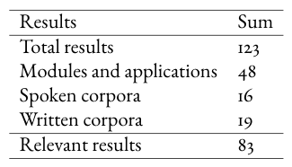
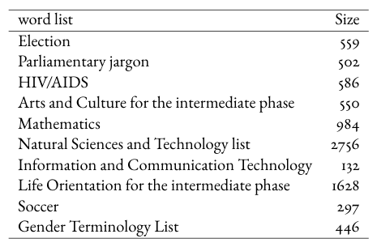

RAIL 2022Tafsiri ya mashine
Muhtasari wa maudhui ya BLARK ya Sesotho
Tafsiri ya mashine, haijakaguliwa na binadamu. Makala asili ndiyo toleo la rejeo; sentensi zilizopigiwa mstari ni zile ambazo ukaguzi wa kiotomatiki haukuwa na uhakika nazo.
Proceedings of the 3rd Workshop on Resources for African Indigenous Languages (RAIL 2022), Journal of the Digital Humanities Association of Southern Africa.
Tafsiri ya Ernst van Gassen (Arktos AI Lab), yenye leseni CC BY-SA 4.0 kama makala asili. Matumizi tena yanaruhusiwa kwa kutaja mwandishi; shiriki marekebisho kwa masharti yale yale. Waandishi asili hawajakagua wala kuidhinisha tafsiri hii.
Maandishi matupu ya kutumia tena, pamoja na leseni yake: Kiswahili · LESENI
Taasisi
Sibeko, Johannes
Nelson Mandela University
Setaka, Mmasibidi
South African Centre for Digital
Language Resources
Anwani za barua pepe zimeondolewa kwa sababu za faragha. Zinapatikana katika PDF asilia.
Muhtasari
Makala haya yanatoa muhtasari wa rasilimali za lugha za kidijitali zinazopatikana kwa Sesotho, lugha rasmi ya Afrika Kusini. Hazina ya Kituo cha Afrika Kusini cha Rasilimali za Lugha za Kidijitali (SADiLaR) inatumika kama rejeleo kwa kuwa ndiyo mwenyeji rasmi wa rasilimali mbalimbali za lugha kwa Lugha za Afrika Kusini. Jumla ya rasilimali 18 zilizoandikwa zinatambuliwa kutoka kwenye hazina hiyo, na rasilimali nyingine 16 za mazungumzo zinatambuliwa. Hatimaye, jumla ya programu tumizi na moduli 45 zilitambuliwa. Matokeo yanaonyesha kwamba programu tumizi na moduli nyingi zinazopatikana kwa Sesotho kwa kweli ni rasilimali za jumla zinazolenga Lugha zote kumi na moja rasmi za Afrika Kusini. Zaidi ya hayo, rasilimali zilizopo zinaonyesha mwelekeo wa kuendeleza rasilimali za lugha za kiwango cha kuingia, za msingi na ukosefu wa rasilimali za kati na za juu zenye utendaji kama vile uchanganuzi wa semantiki kwa rasilimali zilizoandikwa na utabiri wa prosodi kwa rasilimali za mazungumzo. Utafiti huu unakwamishwa na uhaba wa tathmini mahususi za rasilimali na utafiti unaohusiana na unazidishwa na kutokuwepo kwa baadhi ya rasilimali kwenye hazina hiyo.
Maneno Muhimu
Sesotho, BLARKs, rasilimali za maandishi, rasilimali za mazungumzo, rasilimali za lugha za kidijitali
1 Utangulizi
Kuna hamu inayoongezeka katika Teknolojia za Lugha za Kibinadamu (HLTs) kwa lugha zenye rasilimali chache (LRLs) (Strassel & Tracey 2016). Kwa mujibu huo, ukaguzi kadhaa wa HLT umefanywa kwa lugha rasmi za Afrika Kusini (Grover et al. 2010, 2011, Moors, Wilken, Calteaux & Gumede 2018, Moors, Wilken, Gumede & Calteaux 2018). Ukaguzi wa lugha unalenga malengo mawili ambayo ni (i) kubainisha rasilimali zinazohitaji kuendelezwa, na (ii) fursa za utafiti wa fani mbalimbali. Afrika Kusini kwa sasa inatambua lugha rasmi kumi na moja, nazo ni, Afrikaans, English, isiZulu, isiXhosa, Siswati, Xitsonga, Tshivenda, isiNdebele, Setswana, Sepedi na Sesotho. Katika makala hii, tunatoa kipaumbele maalum kwa rasilimali za lugha za kidijitali zinazopatikana kwa Sesotho, lugha ya Kibantu ambayo ni sehemu ya kundi kubwa la SothoTswana pamoja na Sepedi na Setswana (Riep 2013, Van Heerden et al. 2010, Nkolola-Wakumelol et al. 2012, Mojela 2016). Zaidi ya hayo, Kisotho ni mojawapo ya lugha rasmi nchini Lesotho, na ni lugha inayotambuliwa rasmi nchini Zimbabwe (Ndlovu 2011, 2013, Kadenge & Mugari 2015, Wissing & Roux 2017). Kisotho kimeendelezwa kama lugha ya mazungumzo na ya maandishi (Moeketsi 2014, Koai & Fredericks 2019), na kinatumika katika nyanja mbalimbali.
Kati ya lugha rasmi kumi na moja za Afrika Kusini, lugha mbili, nazo: Kiafrikana na Kiingereza cha Afrika Kusini, ndizo zenye rasilimali za lugha za kidijitali nyingi zaidi zikifuatiwa na Kisetswana, Kipedi, Kizulu, Kixhosa na Kisotho bila mpangilio maalum (Moors, Wilken, Calteaux & Gumede 2018, Moors, Wilken, Gumede & Calteaux 2018). Ukweli huu unachochewa na ukosefu wa uwekezaji katika lugha tisa za asili zilizobaki. Picha hii ilionyeshwa katika Warsha ya Ushirikiano na Kompyuta kwa Lugha zenye Rasilimali Chache katika Enzi ya Data Huria Iliyounganishwa (Pretorius et al. 2014). Hata hivyo, ingawa kuna rasilimali za lugha za kidijitali katika Kisotho, lugha hiyo inabakia kutengwa na kuwa na rasilimali chache kwani bado haina data za kutosha za ubora wa juu zilizosimamiwa (Koai & Fredericks 2019, Magueresse et al. 2020). Kwa sababu hiyo, tafiti nyingi zinatambua Kisotho kama lugha yenye rasilimali chache (Mahloane & Trausan-Matu 2015, Chiguvare & Cleghorn 2021, Hanslo 2021, Sibeko & Van Zaanen 2022a). Moors, Wilken, Gumede & Calteaux (2018) wanafikia hatua ya kukitambua kama lugha yenye upungufu mkubwa wa rasilimali. Yaani, ingawa inafundishwa kama lugha ya nyumbani na lugha ya ziada nchini Afrika Kusini na Lesotho, inaendelea kuchunguzwa kidogo kwa ajili ya ukompyutishaji, na hivyo inabaki ikiwa na upendeleo mdogo na msongamano wa chini (Cieri et al. 2016, Magueresse et al. 2020).
Ingawa kumekuwa na ukaguzi wa lugha wa lugha zote kumi na moja rasmi za Afrika Kusini, kadiri tulivyoweza kubaini kwa makala hii, hakuna utafiti ambao umezingatia kwa kina rasilimali za lugha za kidijitali za Kisotho. Kufuatia hayo, makala hii inalenga kueleza rasilimali za lugha za kidijitali za msingi, moduli, na programu-tumizi zinazotumika katika programu-tumizi za maandishi na za usemi kama njia ya kuorodhesha rasilimali za lugha za kidijitali za Kisotho.
2 Usuli
Uchakataji wa Lugha Asilia (NLP) umekuwa eneo amilifu sana la utafiti (Drake 2003). Inalenga kuchanganua kiotomatiki na kuwakilisha lugha ya binadamu kwa kutumia teknolojia za kikompyuta (Cambria & White 2014, Kang et al. 2020). Mbinu hizi za kikompyuta zinategemea nadharia na teknolojia zilizopo zinazowawezesha kujifunza, kutoka kwa maudhui yaliyopo ya lugha ya binadamu, kuelewa jinsi lugha ya binadamu inavyotokezwa, na kutokeza maudhui ya lugha ya binadamu bila kutegemea binadamu (Liddy 2001, Hirschberg & Manning 2015). Utafiti wa NLP hukusanya maarifa kuhusu jinsi binadamu wanavyotumia lugha na kwa upande mwingine kuendeleza programu-tumizi ili kuwezesha kompyuta kuiga na kushughulikia lugha asilia (Chowdhury 2003). Kwa hivyo, NLP ni taaluma ndani ya Ujasusi Bandia (AI) na isimu kwa kuwa ina sifa ya uwezo wa kuchakata lugha unaofanana na wa binadamu (Drake 2003, Nadkarni et al. 2011). Matumizi ya mara kwa mara ya NLP yanajumuisha (i) urejeshaji wa taarifa, (ii) uchimbaji wa taarifa, (iii) kujibu maswali, (iv) ufupisho, (v) tafsiri ya mashine, na (vi) mifumo ya mazungumzo (Drake 2003). Baadhi ya modeli huhudumia zaidi ya lugha moja (Castellucci et al. 2021).
Utekelezaji wa kazi za NLP unategemea upatikanaji wa rasilimali za HLT ambazo hutengenezwa kwa kutumia rasilimali za lugha za kidijitali. Kwa bahati mbaya, hakuna lugha rasmi za Afrika Kusini zilizo na Vifaa vya Msingi vya Rasilimali za Lugha (BLARKs) rasmi kama ilivyodhaniwa katika Krauwer (2003). Kwa ujumla, BLARK inafafanua rasilimali za chini zinazohitajika kwa ajili ya kufanya utafiti wa kabla ya ushindani katika lugha ya kusemwa na kuandikwa kwa lugha maalum (Arppe et al. 2010). BLARKs zimegawanywa katika makundi matatu, yaani, ufafanuzi, vipimo, na maudhui (Maegaard et al. 2006).
Kwanza, kundi la ufafanuzi linaonyesha kile kinachopaswa kuchukuliwa kuwa msingi katika lugha husika. Kwa mfano, Arppe et al. (2016) wanawasilisha matrix inayoonyesha rasilimali zinazohitajika kwa Plains Cree (lugha ya kiasili ya Kanada ya kati) pamoja na viwango vyao vya umuhimu.
Pili, kundi la vipimo linaagiza kiasi cha rasilimali zilizofafanuliwa kama vile vipimo vya msingi vya rasilimali za Kiarabu na Maegaard et al. (2006) vinavyoorodhesha kiasi cha rasilimali zinazohitajika kwa Kiarabu. Hatimaye, kategoria ya maudhui inaelezea kile ambacho tayari kipo. Mfano mmoja wa hili ni uchunguzi wa programu zinazopatikana kwa Kiswidi (Elenius et al. 2008).
Katika makala hii, tunapunguza mjadala wetu wa rasilimali za msingi za kidijitali za lugha kwa maudhui ya BLARK. Yaani, tunaorodhesha rasilimali za kidijitali za lugha zilizoandikwa na zinazozungumzwa zinazopatikana ndani na kwa ajili ya Kisotho. Ingawa ufafanuzi wa maudhui ya BLARK haujategemei lugha, rasilimali zilizotambuliwa na kiwango cha umuhimu kilichotolewa kwa rasilimali hizo ni mahususi kwa Kisotho (Krauwer 2003, Arppe et al. 2010).
Miongoni mwa mengine, tasnia na taasisi za elimu hunufaika kutokana na upatikanaji wa BLARK (Maegaard et al. 2005). Kwa maneno mengine, kwa kuwa BLARK inaweza kutambua kile kilichopo tayari na kile kinachopaswa kuendelezwa, watengenezaji wa viwandani na wa kitaaluma wanaweza kutenga rasilimali zinazohitajika. Zaidi ya hayo, maudhui ya BLARK hurahisisha watafiti na waelimishaji kugundua rasilimali za kulipia na zinazopatikana bure walizo nazo. Hata hivyo, kuna masuala makuu mawili kuhusu BLARK. Kwanza, upatikanaji si tofauti ya namna mbili kwa kuwa baadhi ya rasilimali zilizopo bado zinaweza kuwa zisizoweza kufikiwa kutokana na masuala ya kifedha au hakimiliki (Krauwer 2003). Pili, wingi wa rasilimali hauwezi kulinganishwa na utumikaji, matokeo bora, au urafiki wa mtumiaji.
Wakati wa kutekeleza yaliyomo ya BLARK, vipengele vitatu vya BLARK vinatathminiwa, yaani, (i) data, (ii) moduli, na (iii) matumizi (Arppe et al. 2010, Krauwer 2003). Kwa mfano, katika mjadala wao, Sibeko & Van Zaanen (2022a) wanabainisha programu tumizi yao lengwa, yaani, programu tumizi ya uchanganuzi wa usomaji. Hata hivyo, walionyesha kwamba baadhi ya moduli kama vile mfumo wa ugawaji wa silabi zilihitaji kutengenezwa. Kwa ajili ya utengenezaji wa mfumo wa ugawaji wa silabi, waliunda korasi ya korasi zilizofafanuliwa kwa ugawaji wa silabi. Kwa njia hii, data iliwezesha utengenezaji wa moduli ambayo baadaye itajumuishwa katika programu yao.
3 Mbinu
Inapendekezwa kwamba Kituo cha Afrika Kusini cha Rasilimali za Lugha za Dijiti (SADiLaR) kisimamie kwa makusudi machapisho yote ya rasilimali za lugha katika Lugha za Afrika Kusini (Moors, Wilken, Gumede & Calteaux 2018). SADiLaR inaungwa mkono na kufadhiliwa na Idara ya Kitaifa ya Sayansi na Ubunifu ya Afrika Kusini (Sefara et al. 2021). SADiLaR inasaidia maendeleo na ubunifu katika lugha rasmi za Afrika Kusini. Kulingana na Wilken et al. (2018), SADiLaR pia inalenga kuwezesha upatikanaji wa data za kidijitali na programu tumizi. Kwa lengo hili, ina hazina inayopatikana kwa umma [ https://repo.sadilar.org].
Maudhui ya BLARK yaliyowasilishwa katika makala haya yanategemea rasilimali za lugha za kidijiti zilizoorodheshwa katika hazina iliyotajwa hapo awali. Katika hatua ya kwanza ya utafiti wetu, tulitumia utendakazi wa utafutaji kwenye tovuti ya SADiLaR kutoa rasilimali za lugha zilizoorodheshwa. Hoja pana sana ya utafutaji: "Sesotho" ilitumika kupata jumla ya rasilimali 123. Muhtasari wa matokeo haya umewasilishwa katika Jedwali la 1. Katika hatua ya pili, tulitafuta katika google scholar maandiko yanayohusiana na rasilimali za lugha za kidijitali zilizotambuliwa kutoka kwenye hazina ya SADiLaR. Uchambuzi wetu unajumuisha rasilimali za lugha za jumla ambazo zilitengenezwa kwa ajili ya lugha nyingine na zinaweza kutumika kwa Sesotho, na rasilimali ambazo zilitengenezwa mahususi kwa ajili ya Sesotho. Tunafanya hivi kwa sababu muhtasari wa aina hii haupaswi kuwa mdogo kwa rasilimali za lugha moja (Arppe et al. 2010). Matokeo ya utafutaji yalitathminiwa kwa kujitegemea na watafiti na matokeo yalichambuliwa kwa kulinganisha.
4 Matokeo
Kama ilivyoonyeshwa hapo juu, tunapunguza mjadala wetu kwa maudhui ya BLARK kama yalivyofafanuliwa na Maegaard et al. (2006). Tunajadili rasilimali za maandishi, rasilimali zinazotegemea usemi, moduli, na programu zinazopatikana kwa na kwa ajili ya Sesotho.
4.1 Rasilimali za Maandishi
4.1.1 Leksimu ya lugha moja
Korasi chache za maandishi za lugha moja zilitambuliwa. Kwanza, Kituo cha Kitaifa cha Teknolojia ya Lugha ya Kibinadamu (NCHLT) kilitoa seti nne za data zilizolenga kopasi za kawaida, kopasi zilizofafanuliwa (Eiselen & Puttkamer 2014), vipande vya vishazi (Eiselen 2016b), na huluki iliyotajwa (Eiselen 2016a). Pili, kamusi maalum ya eneo la serikali iliyobinafsishwa iligunduliwa (Bosch & Griesel 2017). Zaidi ya hayo, korasi ya uainishaji wa aina ya maandishi kwa Afrikaans, Sepedi, Setswana, isiXhosa, isiZulu, na Sesotho pia ilitambuliwa. Mkusanyiko huu unajumuisha mashairi, matangazo, vipeperushi vya habari, maelekezo, habari, maandishi rasmi kama vile sera, na maandishi ya hotuba (Snyman et al. 2011). Hatimaye, orodha ya maneno iliyo na vidokezo vya silabi ilitambuliwa. Ina neno moja na matoleo yake yanayolingana yaliyogawanywa kwa silabi kwenye kila mstari (Sibeko & Van Zaanen 2022b). Orodha ya maneno ina seti ya viingizo 1355 vilivyotolewa kutoka kamusi iliyopo ya lugha mbili ya Kisotho-Kiingereza (Chitja 2010).
Jedwali 1: Matokeo ya Hoja ya Utafutaji

Jedwali 2: Orodha za maneno zilizotafsiriwa zinazopatikana kwa Kisotho

4.1.2 Orodha za maneno zilizotafsiriwa
Jozi nyingi za lugha hazina maandishi sambamba ya kutosha (Koehn & Knight 2002). Hii inaonekana kuwa hali ileile katika lugha za kiasili za Afrika Kusini. Hata hivyo, kuna tafsiri chache zinazotumia Kiingereza kama lugha ya kati. Tuligundua jumla ya orodha tisa za maneno kama hizo ambazo zinatafsiriwa kutoka Kiingereza hadi lugha rasmi nyingine za Afrika Kusini. Orodha za maneno zinawasilishwa katika Jedwali la 2.
Orodha za maneno ziliagizwa na Huduma za Lugha za Kitaifa chini ya Idara ya Michezo, Sanaa na Utamaduni ya Afrika Kusini. Orodha za maneno zinawasilisha tafsiri za maneno ya umoja kuhusu masuala mbalimbali kama vile siasa, elimu na michezo. Wataalamu wa lugha na tafsiri katika lugha rasmi mbalimbali za Afrika Kusini hukusanyika katika mazingira ya warsha na maneno hutafsiriwa kwa vikundi. Warsha za uhakiki wa ubora wa kikundi hufanyika ili kuhakikisha tafsiri bora.
Seti mbili za data za kamusi zilizoandikwa ziligunduliwa. Kwanza, orodha ya maneno ya kamusi ya lugha mbili ya Bukantswe ya Kisotho-Kiingereza ina jumla ya sehemu 10085 za lugha mbili katika Kisotho na Kiingereza. Kila mstari unaonyesha neno la Kisotho likifuatiwa na tafsiri ya Kiingereza na aina ya neno husika inapopatikana. Pili, kamusi maalum ya Kisotho kwa kikoa cha serikali ni orodha ya maneno ambayo ina aina mbili za maneno, yaani, yale yaliyo ya kipekee kwa kikoa cha serikali na yale ambayo hayafuati kanuni rasmi za tahajia za Kisotho.
Pia tulitambua mkusanyiko wa lugha nyingi wa Mburisano Covid-19 ambao una msamiati wa uchunguzi na upangaji wa wagonjwa wa mkusanyiko wa lugha nyingi unaohusiana na Covid-19 katika lugha zote rasmi. Mkusanyiko huo ulitengenezwa kwa kukabiliana na janga la Covid-19 kama jaribio la kuhakikisha upatikanaji wa taarifa kwa watu wenye rejesta tofauti za lugha. Kiingereza kinatumika kama maandishi chanzi kwa lugha nyingine zote rasmi. Kwa bahati mbaya, mkusanyiko huo haujawekewa alama wazi kwa lugha maalum. Ingawa rasilimali hii inaitwa korasi, ina orodha ya maneno yaliyotafsiriwa.
4.1.3 Korasi Zilizotafsiriwa kwa Mashine
Tulitambua korasi tatu za Tafsiri ya Mashine (MT). Korasi mbili kati ya hizo zilitolewa kama sehemu ya mradi wa Autshumato MT Translation Memory (TM). Tafsiri za maneno na vishazi vya lugha nyingi na seti ya tathmini ya MT zote zina tafsiri zilizolinganishwa kutoka Kiingereza hadi lugha nyingine kumi rasmi. Korasi ya tatu ya MT, korasi za maandishi za lugha nyingi za Kituo cha Teknolojia ya Maandishi (CText), hutoa maandishi yaliyolinganishwa kwa kiwango cha hati kwa madhumuni ya MT.
4.2 Rasilimali za mazungumzo
Awali tulitambua jumla ya rasilimali 18 zinazohusiana na usemi. Hata hivyo, baada ya uchunguzi wa kina, tuligundua kwamba rasilimali mbili kati ya hizo zilikuwa matokeo ya uwongo. Mfano mmoja kama huo ni mkusanyiko wa Lwazi II wa Majina Sahihi kati ya lugha ambao unakusudiwa Kisotho cha Kaskazini na siyo Sesotho (Kgampe & Davel 2010, 2011). Mwishowe, tunajadili jumla ya rasilimali za lugha 16 za mazungumzo.
4.2.1 Kutoka Neno hadi Sauti na Utambuzi wa Kiotomatiki wa Sauti
Rasilimali saba zilitambuliwa katika kategoria hii. Seti tatu za korasi zilitengenezwa na mradi wa Lwazi. Mbili kati ya korasi hizo zimekusudiwa kwa ajili ya maandishi-kwa-usemi (TTS) huku moja ikiwa na lengo la utambuzi wa usemi otomatiki (ASR). Mikusanyiko ya Lwazi na Lwazi II ya Sesotho TTS ina maandishi yaliyofafanuliwa kwa maelezo ya kifonemiki na kiorthografia. Sentensi za mafunzo zina takriban sauti sawa za usemi (Badenhorst et al. 2011). Korasi ya ASR ya Lwazi ya Kisotho ina sauti na unukuzi unaotumika kwa mifumo ya utambuzi wa usemi ya Lwazi. Manukuu yamefafanuliwa kwa maelezo ya othografia kwa kila neno.
Mradi wa NCHLT pia ulizalisha korasi tatu za TTS. Korasi ya usemi ina data ya usemi wa mkanda mpana iliyonakiliwa kwa tahajia ikijumuisha suite ya maandishi ya wasemaji wanane (De Vries et al. 2014). Pia tulitambua korasi saidizi ya usemi (Barnard et al. 2014, De Vries et al. 2014, Badenhorst et al. 2019). Hatimaye, Kamusi ya Matamshi ya inlang ya Sesotho ina kanuni inayohusishwa ya kuzalisha matamshi kwa maneno ambayo hayajaonekana (Barnard et al. 2014, Davel et al. 2013).
Hatimaye, tulitambua mkusanyiko wa lugha ya Sesotho yenye wasemaji wengi wa TTS ambao una sauti na maelezo yaliyoandikwa yaliyoundwa kwa ajili ya kuchunguza utekelezaji wa mfumo wa TTS wenye ubora wa juu ambao unatumia mchakato wa gharama nafuu. Seti za data zilikaguliwa ubora. Hata hivyo, faili ya read.me inaonyesha kuwa bado kunaweza kuwa na makosa. Kwa bahati mbaya, matokeo ya usahihi hayakuripotiwa.
4.2.2 Korasi zinazotegemea sauti
Katika kategoria hii, tunajadili korasi zinazotegemea toni na matamshi. Korasi nne zinazotegemea toni zilitambuliwa. Kwanza, seti ya data ya sauti ya vokali ya Kisotho ina mkusanyiko wa maneno yanayowakilisha vokali tano za orthografia ya Kisotho, yaani, -a e i o u. Data ya sauti ilirekodiwa na washiriki saba wa kike na watatu wa kiume. Pili, metadata inaonyesha kuwa modeli ya kiimbo kwa lugha za Kibantu zenye toni ina modeli ya Kizulu, Kisepedi, Kisetswana, na Kisotho. Mfano huo unakusudiwa kwa kanuni za kiisimu za kinadharia za kiimbo katika nathari. Kwa bahati mbaya, mfano huo haujapakiwa kwenye hazina. Kwa hivyo, hatuwezi kuripoti kuhusu yaliyomo ndani yake. Tatu, seti ya data ya toni ya Kisotho pia ina rekodi za sauti za wanaume na wanawake. Washiriki walitolewa kutoka eneo maalum la Afrika Kusini linaloitwa Qwaqwa. Nne, korasi za data za usemi wa maneno ya kazi ya Kisotho, zina sauti na manukuu yaliyofafanuliwa yanayolenga kuchunguza dhima ya toni katika ke na o kama maneno ya kazi.
Korasi moja iliyotegemea matamshi iligunduliwa. Korasi ya Majina Sahihi ya Lugha Nyingi ya Afrika Kusini (Multipron) ilitengenezwa kukabiliana na tofauti inayotokana na lafudhi katika matamshi ya majina ya watu (Giwa et al. 2011). Korasi hii hutumia wasemaji tofauti kutoka isiZulu, Kiafrikana, Kiingereza na Kisotho. Washiriki wanne walisoma maneno ya Kisotho. Maneno ya Kisotho yanajumuisha 15% ya data yote iliyokusanywa katika korasi hii. Kila saraka ina unukuzi wa othografia katika faili ya maandishi, unukuzi wa kifonimu ulio na mifuatano ya fonimu na faili ya sauti inayojumuisha uwakilishi wa akustika wa kila neno.
4.2.3 Data ya kuamuru na ya simu
Tulitambua jumla ya rasilimali tatu za lugha za kidijitali katika kategoria hii. Kwanza, korasi ya Majina ya South African Directory Enquiries (SADE) (Thirion et al. 2020), hutumia mzungumzaji wa lugha ya nyumbani ya Kisotho kwa lafudhi, lakini maneno yaliyotumika kufunza jukwaa la kuamuru kwa sauti hayana majina ya Kisotho. Pili, tulitambua seti mbili za data za usemi wa simu. Data ya TTS ya ubora wa juu kwa Kiafrikana, Setswana, isiXhosa na Sesotho ina data ya sauti ya TTS ya wazungumzaji wengi na faili za unukuzi. Korasi ya sauti ya Sesotho ya African Speech Technology ina sauti zinazozungumzwa na wasemaji wa lugha ya kwanza ya Sesotho (Roux et al. 2004). Tatu, korasi ya maagizo ya IVR ya mstari wa msaada wa miji wa SADE inajumuisha sauti na uandishi unaofanana kwa Kiingereza, isiZulu na Sesotho (Van Heerden et al. 2014). Mfumo wa utambuzi uliotengenezwa unatambua matamshi yenye lafudhi za Kiafrikana, Kiingereza, isiZulu na Sesotho. Kiolesura pia kinaweza kubinafsishwa kwa isiZulu au Sesotho.
4.3 Moduli na Programu Tumizi
Sehemu hii inajadili jumla ya moduli na programu tumizi 48 zinazopatikana kwa Sesotho. Baadhi ya programu tumizi zina matoleo ya zamani na mapya zaidi huku nyingine zina matoleo ya msingi na ya kitaalamu.
4.3.1 Programu zisizohusiana na lugha maalum
Programu sita zisizohusiana na lugha maalum zilibainika. Kwanza, Kichimbuzi cha Maandishi cha PDF cha Autshumato kinatumika kuchimbua maandishi kwa ajili ya tafsiri kwa kutumia mashine ya tafsiri otomatiki ya Autshumato. Inafanya kazi kama programu-jalizi kwa programu ya tafsiri inayosaidiwa na kompyuta ya OmegaT. Mfumo wa tafsiri umepewa jina la Autshumato, ambaye huenda alikuwa mtafsiri na mkalimani wa kwanza rasmi wa Afrika Kusini (Groenewald & Fourie 2009, Skosana & Mlambo 2021). Autshumato ni mojawapo ya mipango ya serikali ya Afrika Kusini ya kuboresha wingilugha kupitia ongezeko la wingi na ubora wa huduma za tafsiri (Groenewald & Fourie 2009). Kwa bahati mbaya, ubora na Usahihi wa huduma ya wavuti ya tafsiri ya mashine ni bora tu kwa data ya serikali kwa sababu ilifunzwa kwa aina hii ya data (Skosana & Mlambo 2021). Hata hivyo, ikiwa mtafsiri anatafsiri nyaraka zinazofanana, anaweza kuhifadhi kumbukumbu za tafsiri (TMs) na kuzitegemea.
Pili, tulitambua kiunganishi cha kubadilishana kumbukumbu za tafsiri (TMX) cha Autshumato ambacho hufanya kazi kama zana inayowezesha kuunganisha TM nyingi kupitia mitandao kwa kutumia subversion (Schlemmer & Fourie 2013). Kwa bahati mbaya, kushiriki kumbukumbu za tafsiri bado si utaratibu wa kawaida. Kwa lengo hili, hatuwezi kukadiria mchango unaowezekana ambao miradi binafsi ya tafsiri inaweza kutoa kuelekea kujenga kumbukumbu kubwa na ya kuaminika zaidi ya tafsiri kwa tafsiri za Kisotho. Kiunganishi cha TMX kinasaidia tu tafsiri kutoka Kiingereza kwenda Kisotho na si kutoka Kisotho kwenda Kiingereza (Reina et al. 2013).
Tatu, DictionaryMaker (Davel & Barnard 2003), imetathminiwa kwa Kijerumani, lakini tunatumaini kwamba inaweza pia kutumika kwenye maandishi ya Kisotho. DictionaryMaker inamruhusu mtumiaji kutengeneza kamusi ya matamshi. Inapotumika, juhudi za kibinadamu zinazohitajika kwa kutengeneza kamusi kama hiyo hupungua. Moors, Wilken, Gumede & Calteaux (2018) wanaonyesha kwamba kuna kamusi tatu za matamshi za Kisotho, moja iliyotambuliwa mwaka 2009 na mbili zilizotambuliwa katika ukaguzi wa 2014, yaani, kamusi za matamshi za NCHLT-inlang, Lwazi na Lwazi II.
Nne, tulibainisha programu zinazohusiana na korasi kama vile (i) CorpusCatcher, iliyoundwa kutambaa wavuti kwa data kwa kutumia nyaraka za mbegu kwa ajili ya kuunda hoja za urejeshaji wa nyaraka, (ii) Spelt, inayotumika katika uundaji wa orodha za maneno zilizoainishwa ambazo hutumika katika kikagua tahajia, na (iii) TurboAnnotate1.0, inayotumika kwa uundaji wa kiwango cha dhahabu na orodha zilizofafanuliwa kwa mkono. Kulingana na Van Huyssteen & Puttkammer (2007), programu hii inapunguza juhudi za binadamu na inaboresha Usahihi wa ufafanuzi. Programu ya TurboAnnotate1.0 inatumia mfumo wa ujifunzaji wa mashine wa Tilburg Memory-Based Learner (angalia Daelemans et al. (2004)). Inawaruhusu wazungumzaji wa lugha ya kwanza wenye uzoefu mdogo na wasio na uzoefu wowote wa isimu ya kikompyuta kufafanua maandiko. Ujifunzaji wa mashine kisha hujifunza kutoka kwa maelezo yaliyotolewa na mtumiaji.
4.3.2 Lugha rasmi za Afrika Kusini
Katika sehemu hii, tunajadili programu zilizotengenezwa kwa lugha zote kumi na moja rasmi za Afrika Kusini. Tulibaini angalau programu 30 katika kategoria hii.
Bidhaa tano za NCHLT zilibainishwa, yaani, Optical Character Recognition (OCR), kitambulishi cha lugha, huduma ya wavuti ya maandishi, kiwekaji lebo na kiwekaji lebo cha aina za maneno. OCR kwa Lugha za Afrika Kusini (Hocking & Puttkammer 2016) humwezesha mtumiaji kubadilisha nyaraka zilizochanganuliwa kuwa maandishi yanayoweza kuhaririwa. Inaweza kuzalisha karibu herufi au picha yoyote. Kitambulishi cha Lugha kinatumia kiolesura cha picha cha mtumiaji na kiolesura cha mstari wa amri kwa ajili ya kutambua kiotomatiki lugha rasmi za Afrika Kusini. Huduma za wavuti za maandishi hutoa ufikiaji wa vitokeni, vitenganishi vya sentensi, viwekaji lebo vya POS, vigawanyaji vya vishazi, watambuzi wa huluki zilizotajwa na OCR katika Lugha za Afrika Kusini. Kiwekaji lebo kinaweza kutumika ama kupitia mstari wa amri au kiolesura cha mtumiaji. Inafafanua maandishi yanayoendelea kwa kutumia ama POS, huluki iliyotajwa, vipande vya vishazi vya nomino, au nomino. Hatimaye, viwekaji lebo vya aina za maneno vilitengenezwa kwa kutumia angalau tokeni milioni moja zilizochapishwa na serikali kwa kila lugha (Eiselen & Puttkamer 2014).
Bidhaa nne za CText zilitambuliwa. Kwanza, Alignment Interface na Alignment Interface Pro ni maombi ya utumishi yanayotumika kwa ajili ya kulinganisha maandishi ya chanzo. Toleo la Pro linaruhusu kuhariri sehemu. Bidhaa hizi hufanya kazi na programu tumizi za CText 1 zinazoruhusu uulizaji na uchakataji wa korasi kiotomatiki kwa utokenishaji na ugawaji wa sentensi, uchimbaji wa marudio na orodha ya maneno, utafutaji na uchimbaji wa mpangilio wa maneno. Zaidi ya hayo, Programu za CText 2 huongeza ulekezi wa aina ya neno (POS), utambuzi wa vitu vilivyopewa jina, na ugawaji wa msemo.
Tulibainisha pia programu sita huru, yaani, (i) AStudio, programu inayojumuisha kiolesura cha michoro kwa ajili ya kutengeneza chati za mtiririko kwa programu za usemi, (ii) programu ya Tathmini Kiotomatiki ya Umahiri wa Simulizi, iliyotengenezwa kama sehemu ya mradi wa Uendelezaji wa Rasilimali kwa Ajili ya Ujifunzaji wa Lugha kwa Kusaidiwa na Kompyuta kwa Akili, (iii) kiainishi cha Kitambulishi cha Lugha (LID) uainishaji wa kiwango cha tokeni kwa lugha zote rasmi, (iv) Kitambulishi Mseto kinachotumia kitambulishi chenye msingi wa kumbukumbu (MBT), mashine za vekta saidizi (SVM), kitambulishi cha aina za maneno cha Mobotix (MXPOST) na Trigrams'n'Tags (TnT) kwa kuamua vitambulisho, (v) mkusanyiko wa Fonti za Afrika Kusini unaojumuisha fonti zinazowakilisha alfabeti na herufi zote zinazotumika katika lugha rasmi za Afrika Kusini, na (vi) Kirekebisha Umbizo 1.0. kwa ajili ya kurekebisha faili za pembejeo kuwa utf8 txt, kubadilisha alama za kunukuu mahiri, na kuondoa mistari mitupu.
Rasilimali nne za tafsiri pia zilitambuliwa. Kwanza, mfumo wa tafsiri ya mashine wa Rhonda unaweza kushughulikia tafsiri ya usemi hadi usemi, au tafsiri za usemi hadi maandishi. Pili, Translate application kit 1.4.0 ni mkusanyiko wa programu na vichanganuzi unaoshughulikia miundo mbalimbali inayoweza kubinafsishwa kwa lugha na kutafsiriwa. Inaunda moduli za ugawaji, uthibitishaji na uhesabuji wa maandishi. Tatu, programu za wavuti za Autshumato Translation Management Systems zinaruhusu kunasa, kuhariri, kuhamisha nje na kuingiza istilahi. Nne, Autshumato Text Anonymiser huainisha na kubadilisha taarifa nyeti. Kwa mfano, ikiwa mtu anataka kuficha taarifa nyeti kama vile majina ya washiriki wa utafiti, programu hii huyabadilisha kwa majina bandia.
Programu tano zinazohusiana na TTS pia zilitambuliwa katika kategoria hii. Moja, Jukwaa la Simu la Lwazi linachanganya Asterisk na kiolesura cha Python cha MobillVR katika kiolesura kimoja cha udhibiti kilichounganishwa. Kwa njia hii, mchakato wa kutengeneza programu za majaribio unaharakishwa. Mbili, programu ya ramani za fonimu za Qfrency TTS inatumika pamoja na kamusi za matamshi za Lwazi na NCHLT za lugha rasmi. Tatu, mfumo wa TTS wa lugha nyingi wa Speect unatoa huduma kamili ya kusimbua na kusimba maandiko, yaani, uchanganuzi wa maandiko na usanisi wa usemi kwa API mbalimbali. Zaidi ya hayo, inaweza kutumika kwa utafiti na maendeleo ya sauti za mfumo wa TTS. Nne, mpangaji wa fonetiki unajumuisha hati za mpangilio wa otomatiki wa fonetiki wa korasi za sauti kwa kutumia mifumo ya Markov iliyofichwa. Mwishowe, skripti za Uteuzi wa Maandiko kwa ASR/TTS, hutumia kanuni za kifonetiki kufonetisha maandiko, kisha difoni hutumika kwa TTS na trifoni hutumika kwa ASR kwa misingi ya kila lugha.
4.3.3 Rasilimali mahususi za lugha
Tuligundua programu nne za lugha mahususi ambazo pia zinajumuisha Sesotho. Kwanza, kiolesura cha mtumiaji cha mfumo wa tafsiri wa EtsaTrans kinapatikana kwa Kiingereza, Kiafrikana, isiXhosa na Sesotho. Pili, programu ya Kamusi ya Picha ya Lugha Nyingi yenye michezo shirikishi inapatikana kwa lugha rasmi saba, ambazo ni, Kiafrikana, Kiingereza cha Afrika Kusini, isiXhosa, isiZulu, Sepedi, Setswana na Sesotho. Tatu, NWU TransTips 1.0 ni hati ya programu ya PhP inayovinjari ukurasa wa wavuti kutafuta istilahi katika hifadhidata. Tafsiri huonekana wakati mtumiaji anapoelea juu ya neno fulani. Kwa bahati mbaya, mtumiaji bado anapaswa kuamua tafsiri sahihi kati ya zile zilizowasilishwa.
Mwisho, ufikiaji wa kiotomatiki wa huduma za kifedha kwa njia ya simu kwa lugha nyingi ni mfano unaoruhusu ubadilishaji kati ya isiZulu, isiXhosa, Kiingereza na Sesotho.
4.3.4 Sesotho-pekee
Tuligundua programu saba ambazo ni mahususi kwa Sesotho. Kwanza, tunabainisha bidhaa mbili za NCHLT. Moja, kilemataji kilitengenezwa kwa kutumia mkabala unaozingatia kanuni (Eiselen & Puttkamer 2014). Mbili, Kitenganishi cha Kimofolojia kinachogawanya tokeni kuwa mofimu kilitengenezwa baada ya kiwekaji lebo cha POS (Eiselen & Puttkamer 2014). Ingawa Eiselen & Puttkamer (2014) wanatoa mifano ya utenganishaji kwa isiZulu na Kiafrikana, hakuna mifano ya utenganishaji katika lugha nyingine kama vile Sesotho. Pili, Kamusi ya Matamshi ya Sesotho ya Lwazi inajumuisha sauti za fonimu na seti ya kanuni za herufi-kwa-sauti kulingana na maneno ya jumla (Davel & Martirosian 2009). Ingawa usahihi haujahakikishwa, utumiaji wa vitendo unathibitishwa. Tatu, Kamusi za Matamshi za Lwazi II za Kisotho (Du Plessis et al. 1974), zinategemea kamusi za Lwazi. Nne, Kikagua Tahajia 1.0 ni programu inayokagua tahajia na kutoa mgawanyo wa maneno kwa kistari. Inaoana na baadhi ya matoleo ya Ms Office. CText inaendelea kuboresha maombi haya.
Hatimaye, mifumo ya ugawaji silabi ilitengenezwa kama sehemu ya mradi wa kutengeneza kipimo cha kupima usomaji wa maandishi katika Kisotho. Mifumo miwili ni sehemu ya kifurushi. Moja, mfumo unaotegemea ML unatoa matokeo sahihi kwa asilimia 78.97%. Mbili, mfumo unaotegemea kanuni unatoa matokeo sahihi kwa asilimia 99.69% (Sibeko & Van Zaanen 2022a).
4.3.5 Michezo
Tulibaini mchezo mmoja, Open Spell (v1.0), mchezo wa tahajia ambao una mazoezi ya tahajia yanayolenga kufundisha ujuzi wa tahajia kwa watoto wa shule. Msimbo wa chanzo pia unapatikana kwa uhuru.
5 Mjadala na Hitimisho
LRL nyingi hazijawakilishwa vya kutosha katika kazi za NLP kwa sababu ya ukosefu wa korasi za kutosha zinazohitajika kukamilisha kazi za NLP (Mahloane & Trausan-Matu 2015). Upatikanaji mdogo wa korasi kama ilivyoonyeshwa katika makala hii unaonyesha haja kubwa ya kuratibu korasi zaidi kwa lugha ya Sesotho. Makala hii ilizingatia rasilimali za lugha za kimsingi za kidijitali zinazopatikana kwa Kisotho kutoka mtazamo wa maudhui ya BLARKs.
Rasilimali zilizoorodheshwa ziliorodheshwa bila uchambuzi wa kina wa kila rasilimali kama vile kuzingatia jinsi kila rasilimali inavyofanya kazi au viwango vya Usahihi na masuala ya kivitendo kama vile urahisi wa matumizi. Tulishauriana na fasihi inayohusiana na rasilimali zilizowasilishwa kwenye hazina. Kwa kusudi hili, baadhi ya rasilimali hizi zimehukumiwa kuhusu masuala kama vile Usahihi na urahisi wa matumizi. Hata hivyo, hili halikuwa lengo la makala hii. Hii ni kawaida ya tafiti za maudhui ya BLARK. Ingawa hili ni la msingi, linafanya kazi kama kianzio cha uchunguzi wa vipimo na ufafanuzi wa BLARK. Yaani, kuamua kile kinachopaswa kuchukuliwa kama msingi katika lugha ya Sesotho na kiasi kinachopaswa kuendelezwa. Hata hivyo, ni wazi kutokana na makala hii kwamba rasilimali zilizoandikwa zinalenga tu kazi za msingi sana. Kwa mfano, hakuna rasilimali za utendakazi wa kiwango cha juu zaidi kama vile uchanganuzi wa semantiki na vitoa istilahi. Hata hivyo, ni OCR iliyoandikwa kwa mkono na ontolojia pekee ndizo zinazokosekana kutoka kwa rasilimali zilizoandikwa kama zilivyotambuliwa katika BLARKs (Maegaard et al. 2005, 2006, Krauwer 2003). Kumekuwa na majaribio machache hata zaidi katika teknolojia za usemi, hasa zile zinazolenga Sesotho au kikundi cha lugha cha Sesotho. Hata hivyo, inavutia ni kiasi gani cha kazi kimefikiwa.
Uchunguzi uliofinywa katika rasilimali za sasa na tathmini ya kila teknolojia inapaswa kuzingatiwa kwa tafiti za baadaye. SADiLaR kwa sasa inafanya ukaguzi wao wa kawaida wa rasilimali za lugha, rasilimali zaidi zinaweza kuongezwa kwenye hazina yao baada ya uchunguzi wao. Pengine tunaweza kupata ufahamu zaidi kuhusu rasilimali za lugha za kidijitali zinazopatikana kwa Sesotho.
Makala haya yalikuwa na mipaka katika vipengele vitatu. Kwanza, rasilimali zilizochunguzwa katika mapitio haya hazijatathminiwa kwa ajili ya utumiaji wake, Usahihi, na Ushabaha. Pili, baadhi ya rasilimali ziliorodheshwa tu na kuwekwa kwenye faharasa kwenye hazina, hata hivyo, rasilimali halisi hazikuweza kufikiwa. Tatu, utafiti unapitia tu rasilimali ambazo zimeorodheshwa na SADiLaR. Tunapendekeza kwamba maendeleo ya baadaye ya rasilimali za lugha za kidijitali kwa Sesotho yazingatie orodha hii katika maamuzi yao kuhusu rasilimali zipi za kuendeleza ili mkazo uelekezwe kwenye rasilimali mpya na zisizopatikana kwa sasa. Hata hivyo, tunakiri kwamba faharasa ya sasa inaonyesha tofauti katika mkusanyiko wa sasa.
Shukrani
Tunamshukuru Profesa Menno van Zaanen kwa mwongozo wake katika uandishi wa makala hii na kwa kupendekeza kwamba tushirikiane katika mradi huu.
Marejeo
Arppe, A., Beck, K., Branco, A., Camilleri, V., Caselli, T., Cristea, D., Hinrichs, E., Liin, K., Nissinen, M., Parra, C., Rosner, M., Schuurman, I., Skadina, I., Quochi, V., Van Uytvanck, D. & Vogel, I. (2010), Description of the BLARK, the situation of individual languages, Report, Clarin.
Arppe, A., Lachler, J., Trosterud, T., Antonsen, L. & Moshagen, S. N. (2016), Basic language resource kits for endangered languages: A case study of plains cree, in 'Proceedings of the 2nd Workshop on Collaboration and Computing for Under-Resourced Languages Workshop (CCURL 2016)', pp. 1-8.
Badenhorst, J., Martinus, L. & De Wet, F. (2019), Blstm harvesting of auxiliary nchlt speech data, in 'Proceedings of South African Universities Power Engineering Conference/Robotics and Mechatronics/Pattern Recognition Association of South Africa (SAUPEC/ROBMECH/PRASA 2019)', pp. 123-128.
Badenhorst, J., Van Heerden, C., Davel, M. & Barnard, E. (2011), 'Collecting and evaluating speech recognition corpora for 11 South African languages', Language resources and evaluation pp. 289-309.
Barnard, E., Davel, M. H., Van Heerden, C., F. De Wet, F. & Badenhorst, J. (2014), The nchlt corpus of the South African languages, in 'Proceedings of the 4th International Workshop Spoken Language Technologies for Under-resourced Languages', pp. 194-200.
Bosch, S. & Griesel, M. (2017), 'Strategies for building wordnets for under-resourced languages: the case of African languages', Literator.
Cambria, E. & White, B. (2014), 'Jumping NLP curves: A review of natural language processing research', IEEE Computational intelligence magazine 9, 48-57.
Castellucci, G., Filice, S., Croce, D. & Basili, R. (2021), Learning to solve NLP tasks in an incremental number of languages, in 'Proceedings of the 59th Annual Meeting of the Association for Computational Linguistics and the 11th International Joint Conference on Natural Language Processing (Short Papers)', pp. 837-847.
Chiguvare, P. & Cleghorn, C. W. (2021), Improving transformer model translation for low resource South African languages using bert, in 'IEEE Symposium Series on Computational Intelligence (SSCI)', IEEE, pp. 1-8.
Chitja, M. (2010), Phatlamantsoe ya Sesotho ya Machaba, Mazenod Publishers.
Chowdhury, G. (2003), 'Natural language processing', Annual Review of Information Science and Technology 37, 51-89.
Cieri, C., Maxwell, M., Strassel, S. & Tracey, J. (2016), Selection criteria for low resource language programs, in 'Proceedings of the Tenth International Conference on Language Resources and Evaluation (LREC'16)', pp. 4543-4549.
Daelemans, W., Zavrel, J., Van Der Sloot, K. & Van den Bosch, A. (2004), Timbl: Tilburg memory-based learner, Tehnical report, Tilburg University.
Davel, M. & Barnard, E. (2003), Bootstrapping in language resource generation, in 'Fourteenth Annual Symposium of the Pattern Recognition Association of South Africa', pp. 97-100.
Davel, M., Basson, W., Charl, V. H. & Barnard, E. (2013), 'Nchlt dictionaries: Project report'. URL: https://sites.google.com/site/nchltspeechcorpus/home
Davel, M. & Martirosian, O. (2009), Pronunciation dictionary development in resource-scarce environments, in 'Proceedings of the Interspeech', pp. 2851-2854.
De Vries, N. J., Davel, M. H., Badenhorst, J., Basson, W. D., De Wet, F., Barnard, E. & De Waal, A. (2014), 'A smartphone-based ASR data collection tool for under-resourced languages', Speech Communication pp. 119-131.
Drake, M. (2003), Encyclopedia of Library and Information Science, Second Edition, Taylor & Francis.
Du Plessis, J. A., Gildenhuys, J. G. & Moiloa, J. J. (1974), Moiloa. Bukantswe ya malemepedi Sesotho-Seafrikanse / Tweetalige woordeboek Afrikaans-Suid-Sotho, first edition edn, Via Afrika Beperk.
Eiselen, E. R. & Puttkamer, M. J. (2014), Developing text resources for ten South African languages, in 'Proceedings of the 9th International Conference on Language Resources and Evaluation', pp. 3698-3703.
Eiselen, R. (2016a), Government domain named entity recognition for South African languages, in 'Proceedings of the 10th Language Resource and Evaluation Conference'.
Eiselen, R. (2016b), South African language resources: phrase chunkers, in 'Proceedings of the 10th Language Resource and Evaluation Conference'.
Elenius, K., Forsborm, E. & Megyesi, B. (2008), Language resources and tools for swedish: A survey, in 'Proceedings of the LREC 2008'.
Giwa, O., Davel, M. H. & Barnard, E. (2011), A Southern African corpus for multilingual name pronunciation, in 'Pattern Recognition Association of South Africa and Mechatronics International Conference'.
Groenewald, H. J. & Fourie, W. (2009), Introducing the autshumato integrated translation environment, in 'Proceedings of the 13th Annual conference of the European Association for Machine Translation', pp. 190-196.
Grover, A. S., Van Huyssteen, G. B. & Pretorius, M. W. (2010), The South African human language technologies audit, in 'Proceedings of the Seventh International Conference on Language Resources and Evaluation (LREC'10)', pp. 2847-2850.
Grover, A. S., Van Huyssteen, G. B. & Pretorius, M. W. (2011), 'The South African human language technology audit', Language resources and evaluation 45,271-288.
Hanslo, R. (2021), Evaluation of neural network transformer models for named-entity recognition on low-resourced languages, in '16th Conference on Computer Science and Intelligence Systems (FedCSIS)', IEEE, pp. 115-119.
Hirschberg, J. & Manning, C. D. (2015), 'Advances in natural language processing', Science 349,261-266.
Hocking, J. & Puttkammer, M. (2016), Optical character recognition for South African languages, in 'Pattern Recognition Association of South Africa and Robotics and Mechatronics International Conference (PRASA-RobMech)', pp. 1-5.
Kadenge, M. & Mugari, V. (2015), 'The current politics of African languages in zimbabwe', Per Linguam: a Journal of Language Learning 31, 21-34.
Kang, Y., Cai, Z., Tan, C. W., Huang, Q. & Liu, H. (2020), 'Natural language processing (NLP) in management research: A literature review', Journal of Management Analytics 7,139-172.
Kgampe, M. & Davel, M. H. (2010), Consistency of cross-lingual pronunciation of south-African personal names, in 'Proceedings of the Pattern Recognition Association of South Africa annual symposium (PRASA)', pp. 123-127.
Kgampe, M. & Davel, M. H. (2011), The predictability of name pronunciation errors in four South African languages, in 'Proceedings of the Pattern Recognition Association of South Africa annual symposium (PRASA)', pp. 85-90.
Koai, M. & Fredericks, B. G. (2019), 'Sesotho is still a marginalised language', Southern African Linguistics and Applied Language Studies 37,303-314.
Koehn, P. & Knight, K. (2002), Learning a translation lexicon from monolingual corpora, in 'ACL Special Interest Group on the Lexicon (SIGLEX)', pp. 9-16.
Krauwer, S. (2003), The basic language resource kit (BLARK) as the first milestone for the language resources roadmap, in 'Proceedings of SPECOM', Vol. 2003, pp. 15-22.
Liddy, E. D. (2001), Natural Language Processing, 2nd ed edn, Marcel Decker, Inc.
Maegaard, B., Choukri, K., Mokbel, C. & Yaseen, M. (2005), Language technology for Arabic, Center for Sprogteknologi, University of Copenhagen.
Maegaard, B., Krauwer, S., Choukri, K. & Jørgensen, L. D. (2006), The BLARK concept and BLARK for arabic, in 'LREC', pp. 773-778.
Magueresse, A., Carles, V. & Heetderks, E. (2020), 'Low-resource languages: A review of past work and future challenges', arXiv:2006.07264.
Mahloane, M. J. & Trausan-Matu, S. (2015), Metaphor annotation in Sesotho text corpus: towards the representation of resource-scarce languages in NLP, in '20th International Conference on Control Systems and Computer Science', IEEE, pp. 405-410.
Moeketsi, V. S. M. (2014), 'The demise of Sesotho language in the democratic South Africa and its impact on the socio-cultural development of the speakers', Journal of Sociology and Social Anthropology 5,217-224.
Mojela, V. (2016), Etymology & figurative: The role of etymology in the lemmatization of Sotho terminology, in 'The 10th International Conference of the Asian Association for Lexicography (AsiaLex2016)', IEEE, pp. 93-100.
Moors, C., Wilken, I., Calteaux, K. & Gumede, T. (2018), Human Language Technology Audit 2018: Analysing the development trends in resource availability in all South African languages, in 'Proceedings of the Annual Conference of the South African Institute of Computer Scientists and Information Technologists', pp. 296-304.
Moors, C., Wilken, I., Gumede, T. & Calteaux, K. (2018), 'Human Language Technology Audit 2017/18'. URL: https://sadilar.org/index.php/en/2-general/284-health-resources
Nadkarni, P. M., Ohno-Machado, L. & Chapman, W. W. (2011), 'Natural language processing: an introduction', Journal of the American Medical Informatics Association 18,554-551.
Ndlovu, E. (2011), 'Mother tongue education in the official minority languages in zimbabwe', South African Journal of African Languages 31,229-242.
Ndlovu, E. (2013), Mother tongue education in official minority languages of Zimbabwe: A language management critique, Thesis, University of the Free State.
Nkolola-Wakumelol, M., Rantsoz, L. & Matlhaku, K. (2012), Syllabification of consonants in Sesotho and Setswana, in H. S. Nginga-KoumbaBinza & S. Bosch, eds, 'Language Science and Language technology in Africa: Festschrift for Justus C. Roux', Sun Express, Stellenbosch, South Africa, pp. 10-13.
Pretorius, L., Soria, C. & Baroni, P., eds (2014), CCURL 2014: Collaboration and Computing for Under-Resourced Languages in the Linked Open Data Era, LREC.
Reina, A., Robles, G. & González-Barahona, J. M. (2013), A preliminary analysis of localization in free software: how translations are performed, in 'IFIP International Conference on Open Source Systems', pp. 153-167.
Riep, D. M. (2013), 'Seeing Sesotho: art, history, and the visual language of South Sotho identity', Southern African Humanities 25,217-244.
Roux, J. C., Louw, P. H. & Niesler, T. R. (2004), The African speech technology project: An assessment, in 'Proceedings of LREC', pp. 93-96.
Schlemmer, M. & Fourie, W. (2013), 'Autshumato tmx integrator'. URL: https://repo.sadilar.org/handle/20.500.12185/416
Sefara, T. J., Mokgonyane, T. B. & Marivate, V. (2021), Practical approach on implementation of wordnets for South African languages, in 'Proceedings of the 11th Global Wordnet Conference', Global WordNet Association, pp. 20-25.
Sibeko, J. & Van Zaanen, M. (2022a), Developing a text readability system for Sesotho based on classical readability metrics, in 'Proceedings of Digital Humanities Conference: Responding to Asian diversity', Vol. 2022.
Sibeko, J. & Van Zaanen, M. (2022b), 'Raw and syllabified word list for Sesotho'. URL: https://repo.sadilar.org/handle/20.500.12185/556
Skosana, N. J. & Mlambo, R. (2021), 'A brief study of the autshumato machine translation web service for South African languages', Literator pp. 1-7.
Snyman, D., Van Huyssteen, G. B. & Daelemans, W. (2011), Automatic genre classification for resource scarce languages, in 'Proceedings of the 23rd Annual Symposium of the Pattern Recognition Association of South Africa', pp. 132-137.
Strassel, S. & Tracey, J. (2016), Lorelei language packs: Data, tools, and resources for technology development in low resource languages, in 'Proceedings of the Tenth International Conference on Language Resources and Evaluation (LREC'16)', pp. 3273-3280.
Thirion, J. W., Van Heerden, C., Giwa, O. & Davel, M. H. (2020), 'The South African directory enquiries (sade) name corpus', Language Resources and Evaluation pp. 155-184.
Van Heerden, C., Kleynhans, N., Barnard, E. & Davel, M. (2010), Pooling ASR data for closely related languages, in L. Besacier & E. Castelli, eds, 'Proceedings of the Workshop on Spoken Languages Technologies for Under-Resourced Languages (SLTU 2010)', School of Computer Sciences, Universiti Sains Malaysia, pp. 17-23.
Van Heerden, E., Davel, M. & Barnard, E. (2014), Performance analysis of a multilingual directory enquiries application, in 'Proc. Annual Symp. Pattern Recognition Association of South Africa (PRASA)', pp. 258-263.
Van Huyssteen, G. B. & Puttkammer, M. (2007), 'Accelerating the annotation of lexical data for less-resourced languages', Interspeech pp. 1505-1508.
Wilken, I., Gumede, T., Moors, C. & Calteaux, K. (2018), Human Language Technology Audit 2018: Design considerations and methodology, in 'International Conference on Intelligent and Innovative Computing Applications (ICONIC)', IEEE, pp. 1-7.
Wissing, D. & Roux, J. C. (2017), 'The status of tone in Sesotho: a production and perception study', Nordic Journal of African Studies 26, 19-19.
English na Kiswahili
An overview of Sesotho BLARK content
Muhtasari wa maudhui ya BLARK ya Sesotho
Affiliations
Sibeko, Johannes
Nelson Mandela University
Setaka, Mmasibidi
South African Centre for Digital
Language Resources
Taasisi
Sibeko, Johannes
Nelson Mandela University
Setaka, Mmasibidi
South African Centre for Digital
Language Resources
Abstract
Muhtasari
This article overviews digital language resources available for Sesotho, an official language of South Africa. The South African Center for Digital Language Resources (SADiLaR) repository is used as a reference as it is the official host of various language resources for South African languages. A total of 18 written resources are identified from the repository, and a further 16 spoken resources are identified. Finally, a total of 45 applications and modules were identified. Findings indicate that the majority of applications and modules available for Sesotho are in fact general resources aimed at all eleven official South African languages. Furthermore, the available resources indicate an inclination to the development of entry level, basic language resources and an absence of middle and higher resources with functionalities such as semantic analyses for written resources and prosody prediction for spoken resources. The study is hindered by the dearth of resource specific evaluations and related research and exacerbated by the absence of some of the resources on the repository.
Makala haya yanatoa muhtasari wa rasilimali za lugha za kidijitali zinazopatikana kwa Sesotho, lugha rasmi ya Afrika Kusini. Hazina ya Kituo cha Afrika Kusini cha Rasilimali za Lugha za Kidijitali (SADiLaR) inatumika kama rejeleo kwa kuwa ndiyo mwenyeji rasmi wa rasilimali mbalimbali za lugha kwa Lugha za Afrika Kusini. Jumla ya rasilimali 18 zilizoandikwa zinatambuliwa kutoka kwenye hazina hiyo, na rasilimali nyingine 16 za mazungumzo zinatambuliwa. Hatimaye, jumla ya programu tumizi na moduli 45 zilitambuliwa. Matokeo yanaonyesha kwamba programu tumizi na moduli nyingi zinazopatikana kwa Sesotho kwa kweli ni rasilimali za jumla zinazolenga Lugha zote kumi na moja rasmi za Afrika Kusini. Zaidi ya hayo, rasilimali zilizopo zinaonyesha mwelekeo wa kuendeleza rasilimali za lugha za kiwango cha kuingia, za msingi na ukosefu wa rasilimali za kati na za juu zenye utendaji kama vile uchanganuzi wa semantiki kwa rasilimali zilizoandikwa na utabiri wa prosodi kwa rasilimali za mazungumzo. Utafiti huu unakwamishwa na uhaba wa tathmini mahususi za rasilimali na utafiti unaohusiana na unazidishwa na kutokuwepo kwa baadhi ya rasilimali kwenye hazina hiyo.
Keywords
Maneno Muhimu
Sesotho, BLARKs, Written resources, Spoken Resources, Digital language resources
Sesotho, BLARKs, rasilimali za maandishi, rasilimali za mazungumzo, rasilimali za lugha za kidijitali
1 Introduction
1 Utangulizi
There is a growing interest in Human Language Technologies (HLTs) for low-resourced languages (LRLs) (Strassel & Tracey 2016). Accordingly, a number of HLT audits have been conducted on South African official languages (Grover et al. 2010, 2011, Moors, Wilken, Calteaux & Gumede 2018, Moors, Wilken, Gumede & Calteaux 2018). The language audits are aimed at two objectives that are (i) determining resources that need to be developed, and (ii) opportunities for multidisciplinary research. South Africa currently recognizes eleven official languages, namely, Afrikaans, English, isiZulu, isiXhosa, Siswati, Xitsonga, Tshivenda, isiNdebele, Setswana, Sepedi and Sesotho. In this article, we pay special attention to digital language resources available for Sesotho, a Bantu language that forms part of the bigger SothoTswana group with Sepedi and Setswana (Riep 2013, Van Heerden et al. 2010, Nkolola-Wakumelol et al. 2012, Mojela 2016). Additionally, Sesotho is one of the official languages in Lesotho, and an officially recognised language in Zimbabwe (Ndlovu 2011, 2013, Kadenge & Mugari 2015, Wissing & Roux 2017). Sesotho has developed as both a spoken and written language (Moeketsi 2014, Koai & Fredericks 2019), and is used in a variety of domains.
Kuna hamu inayoongezeka katika Teknolojia za Lugha za Kibinadamu (HLTs) kwa lugha zenye rasilimali chache (LRLs) (Strassel & Tracey 2016). Kwa mujibu huo, ukaguzi kadhaa wa HLT umefanywa kwa lugha rasmi za Afrika Kusini (Grover et al. 2010, 2011, Moors, Wilken, Calteaux & Gumede 2018, Moors, Wilken, Gumede & Calteaux 2018). Ukaguzi wa lugha unalenga malengo mawili ambayo ni (i) kubainisha rasilimali zinazohitaji kuendelezwa, na (ii) fursa za utafiti wa fani mbalimbali. Afrika Kusini kwa sasa inatambua lugha rasmi kumi na moja, nazo ni, Afrikaans, English, isiZulu, isiXhosa, Siswati, Xitsonga, Tshivenda, isiNdebele, Setswana, Sepedi na Sesotho. Katika makala hii, tunatoa kipaumbele maalum kwa rasilimali za lugha za kidijitali zinazopatikana kwa Sesotho, lugha ya Kibantu ambayo ni sehemu ya kundi kubwa la SothoTswana pamoja na Sepedi na Setswana (Riep 2013, Van Heerden et al. 2010, Nkolola-Wakumelol et al. 2012, Mojela 2016). Zaidi ya hayo, Kisotho ni mojawapo ya lugha rasmi nchini Lesotho, na ni lugha inayotambuliwa rasmi nchini Zimbabwe (Ndlovu 2011, 2013, Kadenge & Mugari 2015, Wissing & Roux 2017). Kisotho kimeendelezwa kama lugha ya mazungumzo na ya maandishi (Moeketsi 2014, Koai & Fredericks 2019), na kinatumika katika nyanja mbalimbali.
Of the eleven official languages of South Africa, two languages, namely: Afrikaans and South African English, have the most digital language resources followed by Setswana, Sepedi, isiZulu, isiXhosa and Sesotho in no particular order (Moors, Wilken, Calteaux & Gumede 2018, Moors, Wilken, Gumede & Calteaux 2018). This reality is propelled by the lack of investment into the remaining nine indigenous languages. This image was illustrated at the Workshop on Collaboration and Computing for Under-Resourced Languages in the Linked Open Data Era (Pretorius et al. 2014). Nonetheless, although there are digital language resources in Sesotho, the language remains marginalised and under-resourced as it is yet to have enough high quality supervised data (Koai & Fredericks 2019, Magueresse et al. 2020). As a result, multiple studies identify Sesotho as a low-resourced language (Mahloane & Trausan-Matu 2015, Chiguvare & Cleghorn 2021, Hanslo 2021, Sibeko & Van Zaanen 2022a). Moors, Wilken, Gumede & Calteaux (2018) go as far as identifying it as a severely under-resourced language. That is, although it is taught as a home language and an additional language in both South Africa and Lesotho, it persists to be less studied for computerization, and thus remains less privileged and of low density (Cieri et al. 2016, Magueresse et al. 2020).
Kati ya lugha rasmi kumi na moja za Afrika Kusini, lugha mbili, nazo: Kiafrikana na Kiingereza cha Afrika Kusini, ndizo zenye rasilimali za lugha za kidijitali nyingi zaidi zikifuatiwa na Kisetswana, Kipedi, Kizulu, Kixhosa na Kisotho bila mpangilio maalum (Moors, Wilken, Calteaux & Gumede 2018, Moors, Wilken, Gumede & Calteaux 2018). Ukweli huu unachochewa na ukosefu wa uwekezaji katika lugha tisa za asili zilizobaki. Picha hii ilionyeshwa katika Warsha ya Ushirikiano na Kompyuta kwa Lugha zenye Rasilimali Chache katika Enzi ya Data Huria Iliyounganishwa (Pretorius et al. 2014). Hata hivyo, ingawa kuna rasilimali za lugha za kidijitali katika Kisotho, lugha hiyo inabakia kutengwa na kuwa na rasilimali chache kwani bado haina data za kutosha za ubora wa juu zilizosimamiwa (Koai & Fredericks 2019, Magueresse et al. 2020). Kwa sababu hiyo, tafiti nyingi zinatambua Kisotho kama lugha yenye rasilimali chache (Mahloane & Trausan-Matu 2015, Chiguvare & Cleghorn 2021, Hanslo 2021, Sibeko & Van Zaanen 2022a). Moors, Wilken, Gumede & Calteaux (2018) wanafikia hatua ya kukitambua kama lugha yenye upungufu mkubwa wa rasilimali. Yaani, ingawa inafundishwa kama lugha ya nyumbani na lugha ya ziada nchini Afrika Kusini na Lesotho, inaendelea kuchunguzwa kidogo kwa ajili ya ukompyutishaji, na hivyo inabaki ikiwa na upendeleo mdogo na msongamano wa chini (Cieri et al. 2016, Magueresse et al. 2020).
Although there have been language audits of all eleven official languages of South Africa, as far as we could ascertain for this article, no study has paid in depth attention to Sesotho digital language resources. Ensuingly, this article seeks to describe basic digital language resources, modules, and applications used in written and speech applications as a way of inventorising Sesotho digital language resources.
Ingawa kumekuwa na ukaguzi wa lugha wa lugha zote kumi na moja rasmi za Afrika Kusini, kadiri tulivyoweza kubaini kwa makala hii, hakuna utafiti ambao umezingatia kwa kina rasilimali za lugha za kidijitali za Kisotho. Kufuatia hayo, makala hii inalenga kueleza rasilimali za lugha za kidijitali za msingi, moduli, na programu-tumizi zinazotumika katika programu-tumizi za maandishi na za usemi kama njia ya kuorodhesha rasilimali za lugha za kidijitali za Kisotho.
2 Background
2 Usuli
Natural Language Processing (NLP) has been a very active area of research (Drake 2003). It is aimed at both automatically analysing and representing human language using computational technologies (Cambria & White 2014, Kang et al. 2020). These computational techniques are based on both theory and available technologies that enable them to learn, from existing human language content, understand how the human language is produced, and produce human language content independent of humans (Liddy 2001, Hirschberg & Manning 2015). NLP research gathers knowledge on how humans use language and in turn develop applications to enable computers to simulate and handle natural languages (Chowdhury 2003). As such, NLP is a discipline within Artificial Intelligence (AI) and linguistics since it is characterized by human-like language processing capabilities (Drake 2003, Nadkarni et al. 2011). Frequent applications of NLP include (i) information retrieval, (ii) information extraction, (iii) question answering, (iv) summarization, (v) machine translation, and (vi) dialogue systems (Drake 2003). Some models cater for more than one language (Castellucci et al. 2021).
Uchakataji wa Lugha Asilia (NLP) umekuwa eneo amilifu sana la utafiti (Drake 2003). Inalenga kuchanganua kiotomatiki na kuwakilisha lugha ya binadamu kwa kutumia teknolojia za kikompyuta (Cambria & White 2014, Kang et al. 2020). Mbinu hizi za kikompyuta zinategemea nadharia na teknolojia zilizopo zinazowawezesha kujifunza, kutoka kwa maudhui yaliyopo ya lugha ya binadamu, kuelewa jinsi lugha ya binadamu inavyotokezwa, na kutokeza maudhui ya lugha ya binadamu bila kutegemea binadamu (Liddy 2001, Hirschberg & Manning 2015). Utafiti wa NLP hukusanya maarifa kuhusu jinsi binadamu wanavyotumia lugha na kwa upande mwingine kuendeleza programu-tumizi ili kuwezesha kompyuta kuiga na kushughulikia lugha asilia (Chowdhury 2003). Kwa hivyo, NLP ni taaluma ndani ya Ujasusi Bandia (AI) na isimu kwa kuwa ina sifa ya uwezo wa kuchakata lugha unaofanana na wa binadamu (Drake 2003, Nadkarni et al. 2011). Matumizi ya mara kwa mara ya NLP yanajumuisha (i) urejeshaji wa taarifa, (ii) uchimbaji wa taarifa, (iii) kujibu maswali, (iv) ufupisho, (v) tafsiri ya mashine, na (vi) mifumo ya mazungumzo (Drake 2003). Baadhi ya modeli huhudumia zaidi ya lugha moja (Castellucci et al. 2021).
Carrying out NLP tasks relies on the availability of HLT resources which are developed using digital language resources. Unfortunately, none of the South African official languages have official Basic Language Resource Kits (BLARKs) as conceptualised in Krauwer (2003). Generally, a BLARK defines the minimal required resources for performing pre-competitive research in both spoken and written language for a specific language (Arppe et al. 2010). BLARKs are categorised into three, namely, definition, specification, and content (Maegaard et al. 2006).
Utekelezaji wa kazi za NLP unategemea upatikanaji wa rasilimali za HLT ambazo hutengenezwa kwa kutumia rasilimali za lugha za kidijitali. Kwa bahati mbaya, hakuna lugha rasmi za Afrika Kusini zilizo na Vifaa vya Msingi vya Rasilimali za Lugha (BLARKs) rasmi kama ilivyodhaniwa katika Krauwer (2003). Kwa ujumla, BLARK inafafanua rasilimali za chini zinazohitajika kwa ajili ya kufanya utafiti wa kabla ya ushindani katika lugha ya kusemwa na kuandikwa kwa lugha maalum (Arppe et al. 2010). BLARKs zimegawanywa katika makundi matatu, yaani, ufafanuzi, vipimo, na maudhui (Maegaard et al. 2006).
First, the definition category indicates what should be regarded as basic in the given language. For instance, Arppe et al. (2016) present a matrix that indicates the resources needed for Plains Cree (an indigenous language of central Canada) together with their levels of importance.
Kwanza, kundi la ufafanuzi linaonyesha kile kinachopaswa kuchukuliwa kuwa msingi katika lugha husika. Kwa mfano, Arppe et al. (2016) wanawasilisha matrix inayoonyesha rasilimali zinazohitajika kwa Plains Cree (lugha ya kiasili ya Kanada ya kati) pamoja na viwango vyao vya umuhimu.
Second, the specification category prescribes the quantities of the resources defined such as the Arabic basic resource specification by Maegaard et al. (2006) that lists the quantities of resources needed for Arabic. Finally, the content category describes what already exists. One example of this is a survey of applications available for Swedish (Elenius et al. 2008).
Pili, kundi la vipimo linaagiza kiasi cha rasilimali zilizofafanuliwa kama vile vipimo vya msingi vya rasilimali za Kiarabu na Maegaard et al. (2006) vinavyoorodhesha kiasi cha rasilimali zinazohitajika kwa Kiarabu. Hatimaye, kategoria ya maudhui inaelezea kile ambacho tayari kipo. Mfano mmoja wa hili ni uchunguzi wa programu zinazopatikana kwa Kiswidi (Elenius et al. 2008).
In this article, we limit our discussion of basic digital language resources to BLARK content. That is, we inventorize written and spoken digital language resources available in and for Sesotho. Although the definition of BLARK content is language-independent, the resources identified and the level of importance allotted to the resources are specific to Sesotho (Krauwer 2003, Arppe et al. 2010).
Katika makala hii, tunapunguza mjadala wetu wa rasilimali za msingi za kidijitali za lugha kwa maudhui ya BLARK. Yaani, tunaorodhesha rasilimali za kidijitali za lugha zilizoandikwa na zinazozungumzwa zinazopatikana ndani na kwa ajili ya Kisotho. Ingawa ufafanuzi wa maudhui ya BLARK haujategemei lugha, rasilimali zilizotambuliwa na kiwango cha umuhimu kilichotolewa kwa rasilimali hizo ni mahususi kwa Kisotho (Krauwer 2003, Arppe et al. 2010).
Amongst others, industry and education institutions benefit from the availability of BLARKs (Maegaard et al. 2005). In other words, since the BLARK can identify both what already exists and what should be developed, industrial and academic developers can earmark needed resources. Furthermore, BLARK content makes it easier for researchers and educators to unearth paid and freely accessible resources at their disposal. Even so, there are two main issues with BLARKS. First, availability is not a binary distinction in that some existing resources may still be inaccessible due to financial or copyright issues (Krauwer 2003). Second, the multiplicity of resources may not be equated to usability, quality output, or user-friendliness.
Miongoni mwa mengine, tasnia na taasisi za elimu hunufaika kutokana na upatikanaji wa BLARK (Maegaard et al. 2005). Kwa maneno mengine, kwa kuwa BLARK inaweza kutambua kile kilichopo tayari na kile kinachopaswa kuendelezwa, watengenezaji wa viwandani na wa kitaaluma wanaweza kutenga rasilimali zinazohitajika. Zaidi ya hayo, maudhui ya BLARK hurahisisha watafiti na waelimishaji kugundua rasilimali za kulipia na zinazopatikana bure walizo nazo. Hata hivyo, kuna masuala makuu mawili kuhusu BLARK. Kwanza, upatikanaji si tofauti ya namna mbili kwa kuwa baadhi ya rasilimali zilizopo bado zinaweza kuwa zisizoweza kufikiwa kutokana na masuala ya kifedha au hakimiliki (Krauwer 2003). Pili, wingi wa rasilimali hauwezi kulinganishwa na utumikaji, matokeo bora, au urafiki wa mtumiaji.
When carrying out BLARK content, three BLARK aspects are evaluated, namely, (i) data, (ii) modules, and (iii) applications (Arppe et al. 2010, Krauwer 2003). For instance, in their discussion, Sibeko & Van Zaanen (2022a) identify their target application, that is, a readability analysis application. However, they indicated that some modules such as a syllabification system needed to be developed. For the development of the syllabification system, they created a corpus of syllabification annotated corpora. In this way, the data enabled the development of the module which will then be incorporated into their application.
Wakati wa kutekeleza yaliyomo ya BLARK, vipengele vitatu vya BLARK vinatathminiwa, yaani, (i) data, (ii) moduli, na (iii) matumizi (Arppe et al. 2010, Krauwer 2003). Kwa mfano, katika mjadala wao, Sibeko & Van Zaanen (2022a) wanabainisha programu tumizi yao lengwa, yaani, programu tumizi ya uchanganuzi wa usomaji. Hata hivyo, walionyesha kwamba baadhi ya moduli kama vile mfumo wa ugawaji wa silabi zilihitaji kutengenezwa. Kwa ajili ya utengenezaji wa mfumo wa ugawaji wa silabi, waliunda korasi ya korasi zilizofafanuliwa kwa ugawaji wa silabi. Kwa njia hii, data iliwezesha utengenezaji wa moduli ambayo baadaye itajumuishwa katika programu yao.
3 Methodology
3 Mbinu
It is recommended that the South African Centre for Digital Language Resources (SADiLaR) purposefully manages all publications of language resources in South African languages (Moors, Wilken, Gumede & Calteaux 2018). SADiLaR is supported and funded by the South African National Department of Science and Innovation (Sefara et al. 2021). SADiLaR supports development and innovation in the official languages of South Africa. According to Wilken et al. (2018), SADiLaR also aims to facilitate access to digital data and software applications. To this end, it has a publicly accessible repository [ https://repo.sadilar.org].
Inapendekezwa kwamba Kituo cha Afrika Kusini cha Rasilimali za Lugha za Dijiti (SADiLaR) kisimamie kwa makusudi machapisho yote ya rasilimali za lugha katika Lugha za Afrika Kusini (Moors, Wilken, Gumede & Calteaux 2018). SADiLaR inaungwa mkono na kufadhiliwa na Idara ya Kitaifa ya Sayansi na Ubunifu ya Afrika Kusini (Sefara et al. 2021). SADiLaR inasaidia maendeleo na ubunifu katika lugha rasmi za Afrika Kusini. Kulingana na Wilken et al. (2018), SADiLaR pia inalenga kuwezesha upatikanaji wa data za kidijitali na programu tumizi. Kwa lengo hili, ina hazina inayopatikana kwa umma [ https://repo.sadilar.org].
The BLARK content presented in this article is based on digital language resources indexed in the afore mentioned repository. In the first stage of our research, we used the search functionality on SADiLaR's website to extract the indexed language resources. A very broad search query: "Sesotho" was used to yield a total of 123 resources. A summary of these results is presented in Table 1. In the second stage, we searched google scholar for literature related to the digital language resources identified from SADiLaR's repository. Our analysis includes both general language resources that were developed for other languages and can be applied to Sesotho, and resources that were specifically developed for Sesotho. We do this since overviews of this kind ought not be limited to monolingual resources (Arppe et al. 2010). Search results were independently evaluated by the researchers and the results were comparatively analysed.
Maudhui ya BLARK yaliyowasilishwa katika makala haya yanategemea rasilimali za lugha za kidijiti zilizoorodheshwa katika hazina iliyotajwa hapo awali. Katika hatua ya kwanza ya utafiti wetu, tulitumia utendakazi wa utafutaji kwenye tovuti ya SADiLaR kutoa rasilimali za lugha zilizoorodheshwa. Hoja pana sana ya utafutaji: "Sesotho" ilitumika kupata jumla ya rasilimali 123. Muhtasari wa matokeo haya umewasilishwa katika Jedwali la 1. Katika hatua ya pili, tulitafuta katika google scholar maandiko yanayohusiana na rasilimali za lugha za kidijitali zilizotambuliwa kutoka kwenye hazina ya SADiLaR. Uchambuzi wetu unajumuisha rasilimali za lugha za jumla ambazo zilitengenezwa kwa ajili ya lugha nyingine na zinaweza kutumika kwa Sesotho, na rasilimali ambazo zilitengenezwa mahususi kwa ajili ya Sesotho. Tunafanya hivi kwa sababu muhtasari wa aina hii haupaswi kuwa mdogo kwa rasilimali za lugha moja (Arppe et al. 2010). Matokeo ya utafutaji yalitathminiwa kwa kujitegemea na watafiti na matokeo yalichambuliwa kwa kulinganisha.
4 Findings
4 Matokeo
As indicated above, we limit our discussion to BLARK content as defined by Maegaard et al. (2006). We discuss written resources, speech-based resources, modules, and applications available to and for Sesotho.
Kama ilivyoonyeshwa hapo juu, tunapunguza mjadala wetu kwa maudhui ya BLARK kama yalivyofafanuliwa na Maegaard et al. (2006). Tunajadili rasilimali za maandishi, rasilimali zinazotegemea usemi, moduli, na programu zinazopatikana kwa na kwa ajili ya Sesotho.
4.1 Written Resources
4.1 Rasilimali za Maandishi
4.1.1 Monolingual lexicon
4.1.1 Leksimu ya lugha moja
Few written monolingual corpora were identified. One, the National Centre for Human Language Technology (NCHLT) produced four data sets focused on plain corpora, annotated corpora (Eiselen & Puttkamer 2014), phrase chunks (Eiselen 2016b), and named entity (Eiselen 2016a). Two, a customised government domain specific dictionary was identified (Bosch & Griesel 2017). Furthermore, a genre classification corpus for Afrikaans, Sepedi, Setswana, isiXhosa, isiZulu, and Sesotho was also identified. The corpus is composed of poetry, advertisements, informational pamphlets, instructions, news, official texts like policies, and speech texts (Snyman et al. 2011). Finally, a syllable annotated word list was identified. It contains one word and its corresponding syllabified versions on each line (Sibeko & Van Zaanen 2022b). The word list contains a set of 1355 entries extracted from an existing bilingual Sesotho-English dictionary (Chitja 2010).
Korasi chache za maandishi za lugha moja zilitambuliwa. Kwanza, Kituo cha Kitaifa cha Teknolojia ya Lugha ya Kibinadamu (NCHLT) kilitoa seti nne za data zilizolenga kopasi za kawaida, kopasi zilizofafanuliwa (Eiselen & Puttkamer 2014), vipande vya vishazi (Eiselen 2016b), na huluki iliyotajwa (Eiselen 2016a). Pili, kamusi maalum ya eneo la serikali iliyobinafsishwa iligunduliwa (Bosch & Griesel 2017). Zaidi ya hayo, korasi ya uainishaji wa aina ya maandishi kwa Afrikaans, Sepedi, Setswana, isiXhosa, isiZulu, na Sesotho pia ilitambuliwa. Mkusanyiko huu unajumuisha mashairi, matangazo, vipeperushi vya habari, maelekezo, habari, maandishi rasmi kama vile sera, na maandishi ya hotuba (Snyman et al. 2011). Hatimaye, orodha ya maneno iliyo na vidokezo vya silabi ilitambuliwa. Ina neno moja na matoleo yake yanayolingana yaliyogawanywa kwa silabi kwenye kila mstari (Sibeko & Van Zaanen 2022b). Orodha ya maneno ina seti ya viingizo 1355 vilivyotolewa kutoka kamusi iliyopo ya lugha mbili ya Kisotho-Kiingereza (Chitja 2010).
Table 1: Search Query Results
Jedwali 1: Matokeo ya Hoja ya Utafutaji
Table 2: Translated word lists available in Sesotho
Jedwali 2: Orodha za maneno zilizotafsiriwa zinazopatikana kwa Kisotho
4.1.2 Translated word lists
4.1.2 Orodha za maneno zilizotafsiriwa
Many language pairs lack enough parallel texts (Koehn & Knight 2002). This is seemingly the same case in South African indigenous languages. Even so, there are few translations that use English as a pivot language. We identified a total of nine such word lists that are translated from English to the other official languages of South Africa. The word lists are presented in Table 2.
Jozi nyingi za lugha hazina maandishi sambamba ya kutosha (Koehn & Knight 2002). Hii inaonekana kuwa hali ileile katika lugha za kiasili za Afrika Kusini. Hata hivyo, kuna tafsiri chache zinazotumia Kiingereza kama lugha ya kati. Tuligundua jumla ya orodha tisa za maneno kama hizo ambazo zinatafsiriwa kutoka Kiingereza hadi lugha rasmi nyingine za Afrika Kusini. Orodha za maneno zinawasilishwa katika Jedwali la 2.
The word lists were commissioned by the National Language Services under South Africa's Department of Sport, Arts and Culture. The word lists present singular word translations on different subject matters such as politics, education and sports. Language and translation experts in different official languages of South Africa gather in a workshop setting and words are translated in groups. Group quality assurance workshops are then held to ensure quality translations.
Orodha za maneno ziliagizwa na Huduma za Lugha za Kitaifa chini ya Idara ya Michezo, Sanaa na Utamaduni ya Afrika Kusini. Orodha za maneno zinawasilisha tafsiri za maneno ya umoja kuhusu masuala mbalimbali kama vile siasa, elimu na michezo. Wataalamu wa lugha na tafsiri katika lugha rasmi mbalimbali za Afrika Kusini hukusanyika katika mazingira ya warsha na maneno hutafsiriwa kwa vikundi. Warsha za uhakiki wa ubora wa kikundi hufanyika ili kuhakikisha tafsiri bora.
Two written dictionary data sets were identified. One, the Bukantswe Sesotho-English bilingual dictionary word list contains a total of 10085 bilingual segments in Sesotho and English. Each line presents the Sesotho term followed by the English translation and the relevant part of speech where available. Two, the Sesotho custom dictionary for government domain is a word list that contains two types of words, namely, those that are exclusive to the government domain and those that do not follow official Sesotho orthographic conventions.
Seti mbili za data za kamusi zilizoandikwa ziligunduliwa. Kwanza, orodha ya maneno ya kamusi ya lugha mbili ya Bukantswe ya Kisotho-Kiingereza ina jumla ya sehemu 10085 za lugha mbili katika Kisotho na Kiingereza. Kila mstari unaonyesha neno la Kisotho likifuatiwa na tafsiri ya Kiingereza na aina ya neno husika inapopatikana. Pili, kamusi maalum ya Kisotho kwa kikoa cha serikali ni orodha ya maneno ambayo ina aina mbili za maneno, yaani, yale yaliyo ya kipekee kwa kikoa cha serikali na yale ambayo hayafuati kanuni rasmi za tahajia za Kisotho.
We also identified the Mburisano Covid-19 multilingual corpus that contains screening and triage vocabulary of Covid-19 related multilingual corpora in all official languages. The corpus was developed in response to the Covid-19 pandemic as an attempt to ensure access to information for people of different linguistic repertoires. English is used as the source text for all the other official languages. Unfortunately, the corpus is not clearly marked for specific languages. Although this resource is called a corpus, it contains a translated word list.
Pia tulitambua mkusanyiko wa lugha nyingi wa Mburisano Covid-19 ambao una msamiati wa uchunguzi na upangaji wa wagonjwa wa mkusanyiko wa lugha nyingi unaohusiana na Covid-19 katika lugha zote rasmi. Mkusanyiko huo ulitengenezwa kwa kukabiliana na janga la Covid-19 kama jaribio la kuhakikisha upatikanaji wa taarifa kwa watu wenye rejesta tofauti za lugha. Kiingereza kinatumika kama maandishi chanzi kwa lugha nyingine zote rasmi. Kwa bahati mbaya, mkusanyiko huo haujawekewa alama wazi kwa lugha maalum. Ingawa rasilimali hii inaitwa korasi, ina orodha ya maneno yaliyotafsiriwa.
4.1.3 Machine Translated corpora
4.1.3 Korasi Zilizotafsiriwa kwa Mashine
We identified three Machine Translation (MT) corpora. Two of the corpora were produced as part of the Autshumato MT Translation Memory (TM) project. Both the multilingual word and phrase translations and the MT evaluation set contain aligned translations from English to the other ten official languages. The third MT corpus, the Centre for Text Technology (CText) multilingual text corpora, provides document level aligned texts for MT purposes.
Tulitambua korasi tatu za Tafsiri ya Mashine (MT). Korasi mbili kati ya hizo zilitolewa kama sehemu ya mradi wa Autshumato MT Translation Memory (TM). Tafsiri za maneno na vishazi vya lugha nyingi na seti ya tathmini ya MT zote zina tafsiri zilizolinganishwa kutoka Kiingereza hadi lugha nyingine kumi rasmi. Korasi ya tatu ya MT, korasi za maandishi za lugha nyingi za Kituo cha Teknolojia ya Maandishi (CText), hutoa maandishi yaliyolinganishwa kwa kiwango cha hati kwa madhumuni ya MT.
4.2 Spoken resources
4.2 Rasilimali za mazungumzo
We initially identified a total of 18 speech related resources. However, upon close scrutiny, we found that two of these resources were false results. One such instance is the Lwazi II Cross-lingual Proper Name corpus that is meant for Northern Sotho and not Sesotho (Kgampe & Davel 2010, 2011). In the end, we discuss a total of 16 spoken language resources.
Awali tulitambua jumla ya rasilimali 18 zinazohusiana na usemi. Hata hivyo, baada ya uchunguzi wa kina, tuligundua kwamba rasilimali mbili kati ya hizo zilikuwa matokeo ya uwongo. Mfano mmoja kama huo ni mkusanyiko wa Lwazi II wa Majina Sahihi kati ya lugha ambao unakusudiwa Kisotho cha Kaskazini na siyo Sesotho (Kgampe & Davel 2010, 2011). Mwishowe, tunajadili jumla ya rasilimali za lugha 16 za mazungumzo.
4.2.1 Text to Speech and Automatic Speech Recognition
4.2.1 Kutoka Neno hadi Sauti na Utambuzi wa Kiotomatiki wa Sauti
Seven resources were identified in this category. Three sets of corpora were produced by the Lwazi project. Two of the corpora are purposed for text-to-speech (TTS) while one is aimed at automatic speech recognition (ASR). The Lwazi and Lwazi II Sesotho TTS corpora contain transcriptions annotated with phonemic and orthographic information. The training sentences contain approximately equal speech sounds (Badenhorst et al. 2011). The Lwazi Sesotho ASR corpus contains audios and transcriptions used for the Lwazi speech recognition systems. The transcriptions are annotated with orthographic information for each word.
Rasilimali saba zilitambuliwa katika kategoria hii. Seti tatu za korasi zilitengenezwa na mradi wa Lwazi. Mbili kati ya korasi hizo zimekusudiwa kwa ajili ya maandishi-kwa-usemi (TTS) huku moja ikiwa na lengo la utambuzi wa usemi otomatiki (ASR). Mikusanyiko ya Lwazi na Lwazi II ya Sesotho TTS ina maandishi yaliyofafanuliwa kwa maelezo ya kifonemiki na kiorthografia. Sentensi za mafunzo zina takriban sauti sawa za usemi (Badenhorst et al. 2011). Korasi ya ASR ya Lwazi ya Kisotho ina sauti na unukuzi unaotumika kwa mifumo ya utambuzi wa usemi ya Lwazi. Manukuu yamefafanuliwa kwa maelezo ya othografia kwa kila neno.
The NCHLT project also produced three TTS corpora. The speech corpus contains orthographically transcribed broadband speech data including a text suite of eight speakers (De Vries et al. 2014). We also identified the auxiliary speech corpus (Barnard et al. 2014, De Vries et al. 2014, Badenhorst et al. 2019). Finally, the inlang Pronunciation Dictionary for Sesotho contains an associated rule for generating pronunciations for unseen words (Barnard et al. 2014, Davel et al. 2013).
Mradi wa NCHLT pia ulizalisha korasi tatu za TTS. Korasi ya usemi ina data ya usemi wa mkanda mpana iliyonakiliwa kwa tahajia ikijumuisha suite ya maandishi ya wasemaji wanane (De Vries et al. 2014). Pia tulitambua korasi saidizi ya usemi (Barnard et al. 2014, De Vries et al. 2014, Badenhorst et al. 2019). Hatimaye, Kamusi ya Matamshi ya inlang ya Sesotho ina kanuni inayohusishwa ya kuzalisha matamshi kwa maneno ambayo hayajaonekana (Barnard et al. 2014, Davel et al. 2013).
Lastly, we identified the Sesotho multi-speaker TTS corpus that contains audio and annotated transcriptions created for investigating the implementation of a high-quality TTS system that uses a low-cost process. The data sets were quality checked. However, the read.me file indicates that there might still be some errors. Unfortunately, accuracy results were not reported.
Hatimaye, tulitambua mkusanyiko wa lugha ya Sesotho yenye wasemaji wengi wa TTS ambao una sauti na maelezo yaliyoandikwa yaliyoundwa kwa ajili ya kuchunguza utekelezaji wa mfumo wa TTS wenye ubora wa juu ambao unatumia mchakato wa gharama nafuu. Seti za data zilikaguliwa ubora. Hata hivyo, faili ya read.me inaonyesha kuwa bado kunaweza kuwa na makosa. Kwa bahati mbaya, matokeo ya usahihi hayakuripotiwa.
4.2.2 Sound-based corpora
4.2.2 Korasi zinazotegemea sauti
In this category, we discuss tone-based and pronunciation-based corpora. Four tone-based corpora were identified. First, the Sesotho vowel speech data set contains a collection of words that represent five Sesotho orthographic vowels, that is, -a e i o u. The speech data was recorded with seven females and three male participants. Second, the metadata indicates that the intonation model for Bantu tone languages contains a model for isiZulu, Sepedi, Setswana, and Sesotho. The model is intended for theoretical linguistic intonation rules in prose. Unfortunately, the model has not been uploaded on the repository. As such, we are unable to report on its contents. Third, the Sesotho tone data set also contains male and female audio recordings. The participants were sourced from a specific region of South Africa called Qwaqwa. Fourth, the Sesotho function word speech data corpora, contains audios and annotated transcriptions aimed at studying the role of tone in ke and o as function words.
Katika kategoria hii, tunajadili korasi zinazotegemea toni na matamshi. Korasi nne zinazotegemea toni zilitambuliwa. Kwanza, seti ya data ya sauti ya vokali ya Kisotho ina mkusanyiko wa maneno yanayowakilisha vokali tano za orthografia ya Kisotho, yaani, -a e i o u. Data ya sauti ilirekodiwa na washiriki saba wa kike na watatu wa kiume. Pili, metadata inaonyesha kuwa modeli ya kiimbo kwa lugha za Kibantu zenye toni ina modeli ya Kizulu, Kisepedi, Kisetswana, na Kisotho. Mfano huo unakusudiwa kwa kanuni za kiisimu za kinadharia za kiimbo katika nathari. Kwa bahati mbaya, mfano huo haujapakiwa kwenye hazina. Kwa hivyo, hatuwezi kuripoti kuhusu yaliyomo ndani yake. Tatu, seti ya data ya toni ya Kisotho pia ina rekodi za sauti za wanaume na wanawake. Washiriki walitolewa kutoka eneo maalum la Afrika Kusini linaloitwa Qwaqwa. Nne, korasi za data za usemi wa maneno ya kazi ya Kisotho, zina sauti na manukuu yaliyofafanuliwa yanayolenga kuchunguza dhima ya toni katika ke na o kama maneno ya kazi.
One pronunciation-based corpus was identified. The South African Multilingual Proper Names Corpus (Multipron) was developed in response to accent based variation in the pronunciation of personal names (Giwa et al. 2011). This corpus uses different speakers from isiZulu, Afrikaans, English and Sesotho. Four participants read Sesotho words. Sesotho words comprise 15% of the total data collected in this corpus. Each directory consists of the orthographic transcription in a text file, phonemic transcription containing phoneme strings and an audio file consisting of an acoustic representation of each word.
Korasi moja iliyotegemea matamshi iligunduliwa. Korasi ya Majina Sahihi ya Lugha Nyingi ya Afrika Kusini (Multipron) ilitengenezwa kukabiliana na tofauti inayotokana na lafudhi katika matamshi ya majina ya watu (Giwa et al. 2011). Korasi hii hutumia wasemaji tofauti kutoka isiZulu, Kiafrikana, Kiingereza na Kisotho. Washiriki wanne walisoma maneno ya Kisotho. Maneno ya Kisotho yanajumuisha 15% ya data yote iliyokusanywa katika korasi hii. Kila saraka ina unukuzi wa othografia katika faili ya maandishi, unukuzi wa kifonimu ulio na mifuatano ya fonimu na faili ya sauti inayojumuisha uwakilishi wa akustika wa kila neno.
4.2.3 Dictation and telephony data
4.2.3 Data ya kuamuru na ya simu
We identified a total of three digital language resources in this category. First, the South African Directory Enquiries (SADE) Name corpus (Thirion et al. 2020), uses a Sesotho home language speaker for accent, but the words used for training the voice dictation platform do not contain Sesotho names. Second, we identified two telephony speech data sets. The High quality TTS data for Afrikaans, Setswana, isiXhosa and Sesotho contains multi-speaker TTS audio data and transcription files. The African Speech Technology Sesotho speech corpus contains speech spoken by Sesotho mother tongue speakers (Roux et al. 2004). Third, the SADE municipality hotline IVR prompts corpus contains audio and corresponding transcriptions in English, isiZulu and Sesotho (Van Heerden et al. 2014). The produced recognition system recognises pronunciations with Afrikaans, English, isiZulu and Sesotho accents. The interface can also be customised to isiZulu or Sesotho.
Tulitambua jumla ya rasilimali tatu za lugha za kidijitali katika kategoria hii. Kwanza, korasi ya Majina ya South African Directory Enquiries (SADE) (Thirion et al. 2020), hutumia mzungumzaji wa lugha ya nyumbani ya Kisotho kwa lafudhi, lakini maneno yaliyotumika kufunza jukwaa la kuamuru kwa sauti hayana majina ya Kisotho. Pili, tulitambua seti mbili za data za usemi wa simu. Data ya TTS ya ubora wa juu kwa Kiafrikana, Setswana, isiXhosa na Sesotho ina data ya sauti ya TTS ya wazungumzaji wengi na faili za unukuzi. Korasi ya sauti ya Sesotho ya African Speech Technology ina sauti zinazozungumzwa na wasemaji wa lugha ya kwanza ya Sesotho (Roux et al. 2004). Tatu, korasi ya maagizo ya IVR ya mstari wa msaada wa miji wa SADE inajumuisha sauti na uandishi unaofanana kwa Kiingereza, isiZulu na Sesotho (Van Heerden et al. 2014). Mfumo wa utambuzi uliotengenezwa unatambua matamshi yenye lafudhi za Kiafrikana, Kiingereza, isiZulu na Sesotho. Kiolesura pia kinaweza kubinafsishwa kwa isiZulu au Sesotho.
4.3 Modules and Applications
4.3 Moduli na Programu Tumizi
This section discusses a total of 48 modules and applications available to Sesotho. Some applications have older and newer versions while others have basic and professional versions.
Sehemu hii inajadili jumla ya moduli na programu tumizi 48 zinazopatikana kwa Sesotho. Baadhi ya programu tumizi zina matoleo ya zamani na mapya zaidi huku nyingine zina matoleo ya msingi na ya kitaalamu.
4.3.1 Non-language specific applications
4.3.1 Programu zisizohusiana na lugha maalum
Six non-language specific applications were noted. First, the Autshumato PDF Text Extractor is used for extracting texts for translation using the Autshumato automatic translation machine. It functions as a plugin for the OmegaT computer-assisted translation application. The translation system is named after Autshumato, possibly South Africa's first official translator and interpreter (Groenewald & Fourie 2009, Skosana & Mlambo 2021). Autshumato is one of South African government's initiatives for improving multilingualism through an increase in both quantity and quality of translation services (Groenewald & Fourie 2009). Unfortunately, the quality and accuracy of the machine translation web service is only optimal for government data because it was trained on this type of data (Skosana & Mlambo 2021). Nonetheless, if a translator translates similar documents, they can save the translation memories (TMs) and rely on them.
Programu sita zisizohusiana na lugha maalum zilibainika. Kwanza, Kichimbuzi cha Maandishi cha PDF cha Autshumato kinatumika kuchimbua maandishi kwa ajili ya tafsiri kwa kutumia mashine ya tafsiri otomatiki ya Autshumato. Inafanya kazi kama programu-jalizi kwa programu ya tafsiri inayosaidiwa na kompyuta ya OmegaT. Mfumo wa tafsiri umepewa jina la Autshumato, ambaye huenda alikuwa mtafsiri na mkalimani wa kwanza rasmi wa Afrika Kusini (Groenewald & Fourie 2009, Skosana & Mlambo 2021). Autshumato ni mojawapo ya mipango ya serikali ya Afrika Kusini ya kuboresha wingilugha kupitia ongezeko la wingi na ubora wa huduma za tafsiri (Groenewald & Fourie 2009). Kwa bahati mbaya, ubora na Usahihi wa huduma ya wavuti ya tafsiri ya mashine ni bora tu kwa data ya serikali kwa sababu ilifunzwa kwa aina hii ya data (Skosana & Mlambo 2021). Hata hivyo, ikiwa mtafsiri anatafsiri nyaraka zinazofanana, anaweza kuhifadhi kumbukumbu za tafsiri (TMs) na kuzitegemea.
Second, we identified the Autshumato translation memory exchange (TMX) integrator which works as a utility that enables merging multiple TMs over networks through subversion (Schlemmer & Fourie 2013). Unfortunately, translation memory sharing is not yet common practice. To this end, we cannot estimate the possible contribution that individual translation projects can make towards building a bigger and more reliable translation memory for Sesotho translations. The TMX integrator only supports translation from English to Sesotho and not from Sesotho to English (Reina et al. 2013).
Pili, tulitambua kiunganishi cha kubadilishana kumbukumbu za tafsiri (TMX) cha Autshumato ambacho hufanya kazi kama zana inayowezesha kuunganisha TM nyingi kupitia mitandao kwa kutumia subversion (Schlemmer & Fourie 2013). Kwa bahati mbaya, kushiriki kumbukumbu za tafsiri bado si utaratibu wa kawaida. Kwa lengo hili, hatuwezi kukadiria mchango unaowezekana ambao miradi binafsi ya tafsiri inaweza kutoa kuelekea kujenga kumbukumbu kubwa na ya kuaminika zaidi ya tafsiri kwa tafsiri za Kisotho. Kiunganishi cha TMX kinasaidia tu tafsiri kutoka Kiingereza kwenda Kisotho na si kutoka Kisotho kwenda Kiingereza (Reina et al. 2013).
Third, the DictionaryMaker (Davel & Barnard 2003), has been evaluated on German, but we hope that it can also be applied on Sesotho texts. The DictionaryMaker allows the user to develop a pronunciation dictionary. When used, the human effort needed for developing such a dictionary is decreased. Moors, Wilken, Gumede & Calteaux (2018) indicate that there are three pronunciation dictionaries for Sesotho, one identified in 2009 and two identified in the 2014 audit, namely, the NCHLT-inlang, Lwazi and Lwazi II pronunciation dictionaries.
Tatu, DictionaryMaker (Davel & Barnard 2003), imetathminiwa kwa Kijerumani, lakini tunatumaini kwamba inaweza pia kutumika kwenye maandishi ya Kisotho. DictionaryMaker inamruhusu mtumiaji kutengeneza kamusi ya matamshi. Inapotumika, juhudi za kibinadamu zinazohitajika kwa kutengeneza kamusi kama hiyo hupungua. Moors, Wilken, Gumede & Calteaux (2018) wanaonyesha kwamba kuna kamusi tatu za matamshi za Kisotho, moja iliyotambuliwa mwaka 2009 na mbili zilizotambuliwa katika ukaguzi wa 2014, yaani, kamusi za matamshi za NCHLT-inlang, Lwazi na Lwazi II.
Fourth, we identified corpus related applications such as the (i) CorpusCatcher, designed to crawl the web for data using seed documents for constructing queries for document retrieval, (ii) Spelt, used in the creation of classified word lists that are used in spell checking, and (iii) TurboAnnotate1.0, used for manual creation of gold standard and annotated lists. According to Van Huyssteen & Puttkammer (2007), this application lowers human effort and improves accuracy of annotation. The TurboAnnotate1.0 application uses the Tilburg Memory-Based Learner machine learning system (see Daelemans et al. (2004)). It allows mother tongue speakers with limited and no experience with computational linguistics to annotate texts. Machine learning then learns from the user generated annotations.
Nne, tulibainisha programu zinazohusiana na korasi kama vile (i) CorpusCatcher, iliyoundwa kutambaa wavuti kwa data kwa kutumia nyaraka za mbegu kwa ajili ya kuunda hoja za urejeshaji wa nyaraka, (ii) Spelt, inayotumika katika uundaji wa orodha za maneno zilizoainishwa ambazo hutumika katika kikagua tahajia, na (iii) TurboAnnotate1.0, inayotumika kwa uundaji wa kiwango cha dhahabu na orodha zilizofafanuliwa kwa mkono. Kulingana na Van Huyssteen & Puttkammer (2007), programu hii inapunguza juhudi za binadamu na inaboresha Usahihi wa ufafanuzi. Programu ya TurboAnnotate1.0 inatumia mfumo wa ujifunzaji wa mashine wa Tilburg Memory-Based Learner (angalia Daelemans et al. (2004)). Inawaruhusu wazungumzaji wa lugha ya kwanza wenye uzoefu mdogo na wasio na uzoefu wowote wa isimu ya kikompyuta kufafanua maandiko. Ujifunzaji wa mashine kisha hujifunza kutoka kwa maelezo yaliyotolewa na mtumiaji.
4.3.2 South African official languages
4.3.2 Lugha rasmi za Afrika Kusini
In this section, we discuss applications that were developed for all eleven South African official languages. We identified at least 30 applications in this category.
Katika sehemu hii, tunajadili programu zilizotengenezwa kwa lugha zote kumi na moja rasmi za Afrika Kusini. Tulibaini angalau programu 30 katika kategoria hii.
Five NCHLT products were identified, namely, the Optical Character Recognition (OCR), language identifier, text web service, tagger and Part of Speech tagger. The OCR for South African Languages (Hocking & Puttkammer 2016) enables the user to convert scanned documents into editable texts. It can reproduce almost any character or image. The Language Identifier uses both a graphical user interface and a command line interface for automatically identifying official South African languages. The text web services provides access to tokenisers, sentence separators, POS taggers, phrase chunkers, named entity recognisers and OCR in South African languages. The tagger can be used either through the command line or a user interface. It annotates running text with either POS, named entity, noun phrase chunks, or nouns. Finally, the Part of Speech Taggers were developed using a minimum of one million government published tokens per language (Eiselen & Puttkamer 2014).
Bidhaa tano za NCHLT zilibainishwa, yaani, Optical Character Recognition (OCR), kitambulishi cha lugha, huduma ya wavuti ya maandishi, kiwekaji lebo na kiwekaji lebo cha aina za maneno. OCR kwa Lugha za Afrika Kusini (Hocking & Puttkammer 2016) humwezesha mtumiaji kubadilisha nyaraka zilizochanganuliwa kuwa maandishi yanayoweza kuhaririwa. Inaweza kuzalisha karibu herufi au picha yoyote. Kitambulishi cha Lugha kinatumia kiolesura cha picha cha mtumiaji na kiolesura cha mstari wa amri kwa ajili ya kutambua kiotomatiki lugha rasmi za Afrika Kusini. Huduma za wavuti za maandishi hutoa ufikiaji wa vitokeni, vitenganishi vya sentensi, viwekaji lebo vya POS, vigawanyaji vya vishazi, watambuzi wa huluki zilizotajwa na OCR katika Lugha za Afrika Kusini. Kiwekaji lebo kinaweza kutumika ama kupitia mstari wa amri au kiolesura cha mtumiaji. Inafafanua maandishi yanayoendelea kwa kutumia ama POS, huluki iliyotajwa, vipande vya vishazi vya nomino, au nomino. Hatimaye, viwekaji lebo vya aina za maneno vilitengenezwa kwa kutumia angalau tokeni milioni moja zilizochapishwa na serikali kwa kila lugha (Eiselen & Puttkamer 2014).
Four CText products were identified. First, the Alignment Interface and the Alignment Interface Pro are utility applications used for aligning source texts. The Pro version allows for editing the segments. These products work with the CText applications 1 that allows for automatic corpus query and manipulation for tokenisation and sentencisation, frequency and word list extraction, searching and extracting collocations. Additionally, the CText Applications 2 adds POS tagging, named entity recognition, and phrase chunking.
Bidhaa nne za CText zilitambuliwa. Kwanza, Alignment Interface na Alignment Interface Pro ni maombi ya utumishi yanayotumika kwa ajili ya kulinganisha maandishi ya chanzo. Toleo la Pro linaruhusu kuhariri sehemu. Bidhaa hizi hufanya kazi na programu tumizi za CText 1 zinazoruhusu uulizaji na uchakataji wa korasi kiotomatiki kwa utokenishaji na ugawaji wa sentensi, uchimbaji wa marudio na orodha ya maneno, utafutaji na uchimbaji wa mpangilio wa maneno. Zaidi ya hayo, Programu za CText 2 huongeza ulekezi wa aina ya neno (POS), utambuzi wa vitu vilivyopewa jina, na ugawaji wa msemo.
We also identified six independent applications, namely, (i) the AStudio, a software that incorporates a graphic interface for the developing flowcharts for speech applications, (ii) Automatic Oral Proficiency Assessment application, developed as part of the Development of Resources for Intelligent Computer-Assisted Language Learning project, (iii) the Language Identifier (LID) classifier token level classification for all official languages, (iv) a Combination Tagger that uses memory-based tagger (MBT), support vector machines (SVM), Mobotix part of speech tagger (MXPOST) and Trigrams'n'Tags (TnT) for deciding on tags, (v) the South African Fonts collection that contains fonts representing all alphabets and characters used in South African official languages, and (vi) the Format Normaliser 1.0. for normalising input files to utf8 txt, replacing smart quotes, and removing empty lines.
Tulibainisha pia programu sita huru, yaani, (i) AStudio, programu inayojumuisha kiolesura cha michoro kwa ajili ya kutengeneza chati za mtiririko kwa programu za usemi, (ii) programu ya Tathmini Kiotomatiki ya Umahiri wa Simulizi, iliyotengenezwa kama sehemu ya mradi wa Uendelezaji wa Rasilimali kwa Ajili ya Ujifunzaji wa Lugha kwa Kusaidiwa na Kompyuta kwa Akili, (iii) kiainishi cha Kitambulishi cha Lugha (LID) uainishaji wa kiwango cha tokeni kwa lugha zote rasmi, (iv) Kitambulishi Mseto kinachotumia kitambulishi chenye msingi wa kumbukumbu (MBT), mashine za vekta saidizi (SVM), kitambulishi cha aina za maneno cha Mobotix (MXPOST) na Trigrams'n'Tags (TnT) kwa kuamua vitambulisho, (v) mkusanyiko wa Fonti za Afrika Kusini unaojumuisha fonti zinazowakilisha alfabeti na herufi zote zinazotumika katika lugha rasmi za Afrika Kusini, na (vi) Kirekebisha Umbizo 1.0. kwa ajili ya kurekebisha faili za pembejeo kuwa utf8 txt, kubadilisha alama za kunukuu mahiri, na kuondoa mistari mitupu.
Four translation resources were also identified. One, the Rhonda machine translation system can handle speech to speech translation, or speech to text translations. Two, the Translate application kit 1.4.0 is a collection of applications and parsers that handles various localisable and translatable formats. It composes modules for segmentation, authentication and text enumeration. Three, the Autshumato Translation Management Systems web applications allow for capturing, editing, exporting and importing terminologies. Four, the Autshumato Text Anonymiser classifies and replaces sensitive information. For instance, if one wishes to anonymise sensitive information such as study participants' names, this application replaces them with pseudo names.
Rasilimali nne za tafsiri pia zilitambuliwa. Kwanza, mfumo wa tafsiri ya mashine wa Rhonda unaweza kushughulikia tafsiri ya usemi hadi usemi, au tafsiri za usemi hadi maandishi. Pili, Translate application kit 1.4.0 ni mkusanyiko wa programu na vichanganuzi unaoshughulikia miundo mbalimbali inayoweza kubinafsishwa kwa lugha na kutafsiriwa. Inaunda moduli za ugawaji, uthibitishaji na uhesabuji wa maandishi. Tatu, programu za wavuti za Autshumato Translation Management Systems zinaruhusu kunasa, kuhariri, kuhamisha nje na kuingiza istilahi. Nne, Autshumato Text Anonymiser huainisha na kubadilisha taarifa nyeti. Kwa mfano, ikiwa mtu anataka kuficha taarifa nyeti kama vile majina ya washiriki wa utafiti, programu hii huyabadilisha kwa majina bandia.
Five TTS related applications were also identified in this category. One, the Lwazi Telephony Platform combines Asterisk with MobillVR Python interface in one unified control interface. In this way, the process of developing experimental applications is accelerated. Two, the Qfrency TTS phone mappings application maps is used with Lwazi and NCHLT pronunciation dictionaries of the official languages. Three, the multilingual TTS Speect system provides a full service of decoding and encoding texts, that is, text analysis and speech synthesis with various APIs. Furthermore, it can be used for research and development of TTS system voices. Four, the Phonetic aligner contains scripts for automatic phonetic alignment of speech corpora using the hidden markov models. Finally, the Text Selection scripts for ASR/TTS, uses phonetic rules to phonetise texts, then the diphones are used for TTS and triphones are used for ASR on a per language basis.
Programu tano zinazohusiana na TTS pia zilitambuliwa katika kategoria hii. Moja, Jukwaa la Simu la Lwazi linachanganya Asterisk na kiolesura cha Python cha MobillVR katika kiolesura kimoja cha udhibiti kilichounganishwa. Kwa njia hii, mchakato wa kutengeneza programu za majaribio unaharakishwa. Mbili, programu ya ramani za fonimu za Qfrency TTS inatumika pamoja na kamusi za matamshi za Lwazi na NCHLT za lugha rasmi. Tatu, mfumo wa TTS wa lugha nyingi wa Speect unatoa huduma kamili ya kusimbua na kusimba maandiko, yaani, uchanganuzi wa maandiko na usanisi wa usemi kwa API mbalimbali. Zaidi ya hayo, inaweza kutumika kwa utafiti na maendeleo ya sauti za mfumo wa TTS. Nne, mpangaji wa fonetiki unajumuisha hati za mpangilio wa otomatiki wa fonetiki wa korasi za sauti kwa kutumia mifumo ya Markov iliyofichwa. Mwishowe, skripti za Uteuzi wa Maandiko kwa ASR/TTS, hutumia kanuni za kifonetiki kufonetisha maandiko, kisha difoni hutumika kwa TTS na trifoni hutumika kwa ASR kwa misingi ya kila lugha.
4.3.3 Language specific resources
4.3.3 Rasilimali mahususi za lugha
We identified four language specific applications that also incorporate Sesotho. One, the EtsaTrans translation system user interface is available in English, Afrikaans, isiXhosa and Sesotho. Two, the Multilingual Illustrated Dictionary with interactive games application is available for seven of official languages, namely, Afrikaans, South African English, isiXhosa, isiZulu, Sepedi, Setswana and Sesotho. Three, the NWU TransTips 1.0 is a PhP programming script that browses the web page for terms in the database. The translations appear when the user hovers over a certain word. Unfortunately, the user still has to decide on the correct translation between those presented.
Tuligundua programu nne za lugha mahususi ambazo pia zinajumuisha Sesotho. Kwanza, kiolesura cha mtumiaji cha mfumo wa tafsiri wa EtsaTrans kinapatikana kwa Kiingereza, Kiafrikana, isiXhosa na Sesotho. Pili, programu ya Kamusi ya Picha ya Lugha Nyingi yenye michezo shirikishi inapatikana kwa lugha rasmi saba, ambazo ni, Kiafrikana, Kiingereza cha Afrika Kusini, isiXhosa, isiZulu, Sepedi, Setswana na Sesotho. Tatu, NWU TransTips 1.0 ni hati ya programu ya PhP inayovinjari ukurasa wa wavuti kutafuta istilahi katika hifadhidata. Tafsiri huonekana wakati mtumiaji anapoelea juu ya neno fulani. Kwa bahati mbaya, mtumiaji bado anapaswa kuamua tafsiri sahihi kati ya zile zilizowasilishwa.
Lastly, the Automated multilingual telephone access to financial services is a prototype that allows switching between isiZulu, isiXhosa, English and Sesotho.
Mwisho, ufikiaji wa kiotomatiki wa huduma za kifedha kwa njia ya simu kwa lugha nyingi ni mfano unaoruhusu ubadilishaji kati ya isiZulu, isiXhosa, Kiingereza na Sesotho.
4.3.4 Sesotho-only
4.3.4 Sesotho-pekee
We identified seven applications that are specifically for Sesotho. First, we identify two NCHLT products. One, the lemmatiser was developed using a rules-based approach (Eiselen & Puttkamer 2014). Two, the Morphological Decomposer that splits tokens to morphemes was developed after the POS tagger (Eiselen & Puttkamer 2014). Although Eiselen & Puttkamer (2014) provide examples of decomposition for isiZulu and Afrikaans, there are no examples for decomposition in other languages such as Sesotho. Second, the Lwazi Sesotho Pronunciation Dictionary includes audios for phonemes and letter-to-sound rule set based on generic words (Davel & Martirosian 2009). Although accuracy is not guaranteed, practical usability is assured. Third, the Lwazi II Sotho Pronunciation Dictionaries (Du Plessis et al. 1974), are based on the Lwazi dictionaries. Fourth, the Spelling Checker 1.0 is an application that checks spelling and provides hyphenations. It is compatible with some versions of Ms Office. CText continues to improve this application.
Tuligundua programu saba ambazo ni mahususi kwa Sesotho. Kwanza, tunabainisha bidhaa mbili za NCHLT. Moja, kilemataji kilitengenezwa kwa kutumia mkabala unaozingatia kanuni (Eiselen & Puttkamer 2014). Mbili, Kitenganishi cha Kimofolojia kinachogawanya tokeni kuwa mofimu kilitengenezwa baada ya kiwekaji lebo cha POS (Eiselen & Puttkamer 2014). Ingawa Eiselen & Puttkamer (2014) wanatoa mifano ya utenganishaji kwa isiZulu na Kiafrikana, hakuna mifano ya utenganishaji katika lugha nyingine kama vile Sesotho. Pili, Kamusi ya Matamshi ya Sesotho ya Lwazi inajumuisha sauti za fonimu na seti ya kanuni za herufi-kwa-sauti kulingana na maneno ya jumla (Davel & Martirosian 2009). Ingawa usahihi haujahakikishwa, utumiaji wa vitendo unathibitishwa. Tatu, Kamusi za Matamshi za Lwazi II za Kisotho (Du Plessis et al. 1974), zinategemea kamusi za Lwazi. Nne, Kikagua Tahajia 1.0 ni programu inayokagua tahajia na kutoa mgawanyo wa maneno kwa kistari. Inaoana na baadhi ya matoleo ya Ms Office. CText inaendelea kuboresha maombi haya.
Finally, syllabification systems were developed as part of a project on developing a metric for measuring text readability in Sesotho. Two systems are part of the package. One, the ML-Based system produces 78.97% accurate results. Two, the rules-based system produces 99.69% accurate results (Sibeko & Van Zaanen 2022a).
Hatimaye, mifumo ya ugawaji silabi ilitengenezwa kama sehemu ya mradi wa kutengeneza kipimo cha kupima usomaji wa maandishi katika Kisotho. Mifumo miwili ni sehemu ya kifurushi. Moja, mfumo unaotegemea ML unatoa matokeo sahihi kwa asilimia 78.97%. Mbili, mfumo unaotegemea kanuni unatoa matokeo sahihi kwa asilimia 99.69% (Sibeko & Van Zaanen 2022a).
4.3.5 Games
4.3.5 Michezo
We identified one game, the Open Spell (v1.0), a spelling game that contains spelling exercises aimed at teaching spelling skills to school children. The source code is also freely accessible.
Tulibaini mchezo mmoja, Open Spell (v1.0), mchezo wa tahajia ambao una mazoezi ya tahajia yanayolenga kufundisha ujuzi wa tahajia kwa watoto wa shule. Msimbo wa chanzo pia unapatikana kwa uhuru.
5 Discussion and conclusion
5 Mjadala na Hitimisho
Many LRL's are underrepresented in NLP tasks because of insufficient corpora needed to complete NLP tasks (Mahloane & Trausan-Matu 2015). The limited availability of corpora as indicated in this article shows a great need for curating more corpora for Sesotho. This article considered basic digital language resources available to Sesotho from a BLARKs content perspective.
LRL nyingi hazijawakilishwa vya kutosha katika kazi za NLP kwa sababu ya ukosefu wa korasi za kutosha zinazohitajika kukamilisha kazi za NLP (Mahloane & Trausan-Matu 2015). Upatikanaji mdogo wa korasi kama ilivyoonyeshwa katika makala hii unaonyesha haja kubwa ya kuratibu korasi zaidi kwa lugha ya Sesotho. Makala hii ilizingatia rasilimali za lugha za kimsingi za kidijitali zinazopatikana kwa Kisotho kutoka mtazamo wa maudhui ya BLARKs.
The listed resources were listed without in depth analysis of each resource such as considering how each resource works or the levels of accuracy and practical issues such as user-friendliness. We consulted literature relevant to the resources presented in the repository. To this end, some of these resources have been judged on issues such as accuracy and user-friendliness. However, this was not the aim of this paper. This is typical of BLARK content studies. Although this is basic, it functions as a starting point for investigations of BLARKs specification and definition. That is, determining what should be regarded as basic in the language in Sesotho and the quantities that should be developed. Nonetheless, it is clear from this article that written resources are focused only on very basic functions. For instance, there are no resources for higher level basic functionalities such as semantic analysis and term extractors. Even so, only the handwritten OCR and ontologies are missing from the written resources as identified in the BLARKs (Maegaard et al. 2005, 2006, Krauwer 2003). There have been even fewer attempts at speech technologies, especially those that are specifically aimed at Sesotho or the Sesotho language group. Even so, it is interesting how much work has been achieved.
Rasilimali zilizoorodheshwa ziliorodheshwa bila uchambuzi wa kina wa kila rasilimali kama vile kuzingatia jinsi kila rasilimali inavyofanya kazi au viwango vya Usahihi na masuala ya kivitendo kama vile urahisi wa matumizi. Tulishauriana na fasihi inayohusiana na rasilimali zilizowasilishwa kwenye hazina. Kwa kusudi hili, baadhi ya rasilimali hizi zimehukumiwa kuhusu masuala kama vile Usahihi na urahisi wa matumizi. Hata hivyo, hili halikuwa lengo la makala hii. Hii ni kawaida ya tafiti za maudhui ya BLARK. Ingawa hili ni la msingi, linafanya kazi kama kianzio cha uchunguzi wa vipimo na ufafanuzi wa BLARK. Yaani, kuamua kile kinachopaswa kuchukuliwa kama msingi katika lugha ya Sesotho na kiasi kinachopaswa kuendelezwa. Hata hivyo, ni wazi kutokana na makala hii kwamba rasilimali zilizoandikwa zinalenga tu kazi za msingi sana. Kwa mfano, hakuna rasilimali za utendakazi wa kiwango cha juu zaidi kama vile uchanganuzi wa semantiki na vitoa istilahi. Hata hivyo, ni OCR iliyoandikwa kwa mkono na ontolojia pekee ndizo zinazokosekana kutoka kwa rasilimali zilizoandikwa kama zilivyotambuliwa katika BLARKs (Maegaard et al. 2005, 2006, Krauwer 2003). Kumekuwa na majaribio machache hata zaidi katika teknolojia za usemi, hasa zile zinazolenga Sesotho au kikundi cha lugha cha Sesotho. Hata hivyo, inavutia ni kiasi gani cha kazi kimefikiwa.
A narrowed investigation into the current resources and an evaluation of each technology should be considered for future studies. SADiLaR is currently conducting their routine language resource audit, more resources might be added to their repository after their investigation. Perhaps we may gain more insight into digital language resources available to Sesotho.
Uchunguzi uliofinywa katika rasilimali za sasa na tathmini ya kila teknolojia inapaswa kuzingatiwa kwa tafiti za baadaye. SADiLaR kwa sasa inafanya ukaguzi wao wa kawaida wa rasilimali za lugha, rasilimali zaidi zinaweza kuongezwa kwenye hazina yao baada ya uchunguzi wao. Pengine tunaweza kupata ufahamu zaidi kuhusu rasilimali za lugha za kidijitali zinazopatikana kwa Sesotho.
This article was limited in three aspects. First, the resources surveyed in this review are not evaluated for their usability, accuracy, and precision. Second, some of the resources were only listed and indexed on the repository, however, the actual resources were not accessible. Third, the study only reviews resources that are indexed by SADiLaR. We recommend that future developments of digital language resources for Sesotho consider this inventory in their decisions on what resources to develop so that focus is paid to new and currently unavailable resources. Even so, we acknowledge that the current index indicates variation in the current collection.
Makala haya yalikuwa na mipaka katika vipengele vitatu. Kwanza, rasilimali zilizochunguzwa katika mapitio haya hazijatathminiwa kwa ajili ya utumiaji wake, Usahihi, na Ushabaha. Pili, baadhi ya rasilimali ziliorodheshwa tu na kuwekwa kwenye faharasa kwenye hazina, hata hivyo, rasilimali halisi hazikuweza kufikiwa. Tatu, utafiti unapitia tu rasilimali ambazo zimeorodheshwa na SADiLaR. Tunapendekeza kwamba maendeleo ya baadaye ya rasilimali za lugha za kidijitali kwa Sesotho yazingatie orodha hii katika maamuzi yao kuhusu rasilimali zipi za kuendeleza ili mkazo uelekezwe kwenye rasilimali mpya na zisizopatikana kwa sasa. Hata hivyo, tunakiri kwamba faharasa ya sasa inaonyesha tofauti katika mkusanyiko wa sasa.
Acknowledgements
Shukrani
We acknowledge Professor Menno van Zaanen for his guidance in the writing of this article and for suggesting that we collaborate on this project.
Tunamshukuru Profesa Menno van Zaanen kwa mwongozo wake katika uandishi wa makala hii na kwa kupendekeza kwamba tushirikiane katika mradi huu.
References
Marejeo
Arppe, A., Beck, K., Branco, A., Camilleri, V., Caselli, T., Cristea, D., Hinrichs, E., Liin, K., Nissinen, M., Parra, C., Rosner, M., Schuurman, I., Skadina, I., Quochi, V., Van Uytvanck, D. & Vogel, I. (2010), Description of the BLARK, the situation of individual languages, Report, Clarin.
Arppe, A., Lachler, J., Trosterud, T., Antonsen, L. & Moshagen, S. N. (2016), Basic language resource kits for endangered languages: A case study of plains cree, in 'Proceedings of the 2nd Workshop on Collaboration and Computing for Under-Resourced Languages Workshop (CCURL 2016)', pp. 1-8.
Badenhorst, J., Martinus, L. & De Wet, F. (2019), Blstm harvesting of auxiliary nchlt speech data, in 'Proceedings of South African Universities Power Engineering Conference/Robotics and Mechatronics/Pattern Recognition Association of South Africa (SAUPEC/ROBMECH/PRASA 2019)', pp. 123-128.
Badenhorst, J., Van Heerden, C., Davel, M. & Barnard, E. (2011), 'Collecting and evaluating speech recognition corpora for 11 South African languages', Language resources and evaluation pp. 289-309.
Barnard, E., Davel, M. H., Van Heerden, C., F. De Wet, F. & Badenhorst, J. (2014), The nchlt corpus of the South African languages, in 'Proceedings of the 4th International Workshop Spoken Language Technologies for Under-resourced Languages', pp. 194-200.
Bosch, S. & Griesel, M. (2017), 'Strategies for building wordnets for under-resourced languages: the case of African languages', Literator.
Cambria, E. & White, B. (2014), 'Jumping NLP curves: A review of natural language processing research', IEEE Computational intelligence magazine 9, 48-57.
Castellucci, G., Filice, S., Croce, D. & Basili, R. (2021), Learning to solve NLP tasks in an incremental number of languages, in 'Proceedings of the 59th Annual Meeting of the Association for Computational Linguistics and the 11th International Joint Conference on Natural Language Processing (Short Papers)', pp. 837-847.
Chiguvare, P. & Cleghorn, C. W. (2021), Improving transformer model translation for low resource South African languages using bert, in 'IEEE Symposium Series on Computational Intelligence (SSCI)', IEEE, pp. 1-8.
Chitja, M. (2010), Phatlamantsoe ya Sesotho ya Machaba, Mazenod Publishers.
Chowdhury, G. (2003), 'Natural language processing', Annual Review of Information Science and Technology 37, 51-89.
Cieri, C., Maxwell, M., Strassel, S. & Tracey, J. (2016), Selection criteria for low resource language programs, in 'Proceedings of the Tenth International Conference on Language Resources and Evaluation (LREC'16)', pp. 4543-4549.
Daelemans, W., Zavrel, J., Van Der Sloot, K. & Van den Bosch, A. (2004), Timbl: Tilburg memory-based learner, Tehnical report, Tilburg University.
Davel, M. & Barnard, E. (2003), Bootstrapping in language resource generation, in 'Fourteenth Annual Symposium of the Pattern Recognition Association of South Africa', pp. 97-100.
Davel, M., Basson, W., Charl, V. H. & Barnard, E. (2013), 'Nchlt dictionaries: Project report'. URL: https://sites.google.com/site/nchltspeechcorpus/home
Davel, M. & Martirosian, O. (2009), Pronunciation dictionary development in resource-scarce environments, in 'Proceedings of the Interspeech', pp. 2851-2854.
De Vries, N. J., Davel, M. H., Badenhorst, J., Basson, W. D., De Wet, F., Barnard, E. & De Waal, A. (2014), 'A smartphone-based ASR data collection tool for under-resourced languages', Speech Communication pp. 119-131.
Drake, M. (2003), Encyclopedia of Library and Information Science, Second Edition, Taylor & Francis.
Du Plessis, J. A., Gildenhuys, J. G. & Moiloa, J. J. (1974), Moiloa. Bukantswe ya malemepedi Sesotho-Seafrikanse / Tweetalige woordeboek Afrikaans-Suid-Sotho, first edition edn, Via Afrika Beperk.
Eiselen, E. R. & Puttkamer, M. J. (2014), Developing text resources for ten South African languages, in 'Proceedings of the 9th International Conference on Language Resources and Evaluation', pp. 3698-3703.
Eiselen, R. (2016a), Government domain named entity recognition for South African languages, in 'Proceedings of the 10th Language Resource and Evaluation Conference'.
Eiselen, R. (2016b), South African language resources: phrase chunkers, in 'Proceedings of the 10th Language Resource and Evaluation Conference'.
Elenius, K., Forsborm, E. & Megyesi, B. (2008), Language resources and tools for swedish: A survey, in 'Proceedings of the LREC 2008'.
Giwa, O., Davel, M. H. & Barnard, E. (2011), A Southern African corpus for multilingual name pronunciation, in 'Pattern Recognition Association of South Africa and Mechatronics International Conference'.
Groenewald, H. J. & Fourie, W. (2009), Introducing the autshumato integrated translation environment, in 'Proceedings of the 13th Annual conference of the European Association for Machine Translation', pp. 190-196.
Grover, A. S., Van Huyssteen, G. B. & Pretorius, M. W. (2010), The South African human language technologies audit, in 'Proceedings of the Seventh International Conference on Language Resources and Evaluation (LREC'10)', pp. 2847-2850.
Grover, A. S., Van Huyssteen, G. B. & Pretorius, M. W. (2011), 'The South African human language technology audit', Language resources and evaluation 45,271-288.
Hanslo, R. (2021), Evaluation of neural network transformer models for named-entity recognition on low-resourced languages, in '16th Conference on Computer Science and Intelligence Systems (FedCSIS)', IEEE, pp. 115-119.
Hirschberg, J. & Manning, C. D. (2015), 'Advances in natural language processing', Science 349,261-266.
Hocking, J. & Puttkammer, M. (2016), Optical character recognition for South African languages, in 'Pattern Recognition Association of South Africa and Robotics and Mechatronics International Conference (PRASA-RobMech)', pp. 1-5.
Kadenge, M. & Mugari, V. (2015), 'The current politics of African languages in zimbabwe', Per Linguam: a Journal of Language Learning 31, 21-34.
Kang, Y., Cai, Z., Tan, C. W., Huang, Q. & Liu, H. (2020), 'Natural language processing (NLP) in management research: A literature review', Journal of Management Analytics 7,139-172.
Kgampe, M. & Davel, M. H. (2010), Consistency of cross-lingual pronunciation of south-African personal names, in 'Proceedings of the Pattern Recognition Association of South Africa annual symposium (PRASA)', pp. 123-127.
Kgampe, M. & Davel, M. H. (2011), The predictability of name pronunciation errors in four South African languages, in 'Proceedings of the Pattern Recognition Association of South Africa annual symposium (PRASA)', pp. 85-90.
Koai, M. & Fredericks, B. G. (2019), 'Sesotho is still a marginalised language', Southern African Linguistics and Applied Language Studies 37,303-314.
Koehn, P. & Knight, K. (2002), Learning a translation lexicon from monolingual corpora, in 'ACL Special Interest Group on the Lexicon (SIGLEX)', pp. 9-16.
Krauwer, S. (2003), The basic language resource kit (BLARK) as the first milestone for the language resources roadmap, in 'Proceedings of SPECOM', Vol. 2003, pp. 15-22.
Liddy, E. D. (2001), Natural Language Processing, 2nd ed edn, Marcel Decker, Inc.
Maegaard, B., Choukri, K., Mokbel, C. & Yaseen, M. (2005), Language technology for Arabic, Center for Sprogteknologi, University of Copenhagen.
Maegaard, B., Krauwer, S., Choukri, K. & Jørgensen, L. D. (2006), The BLARK concept and BLARK for arabic, in 'LREC', pp. 773-778.
Magueresse, A., Carles, V. & Heetderks, E. (2020), 'Low-resource languages: A review of past work and future challenges', arXiv:2006.07264.
Mahloane, M. J. & Trausan-Matu, S. (2015), Metaphor annotation in Sesotho text corpus: towards the representation of resource-scarce languages in NLP, in '20th International Conference on Control Systems and Computer Science', IEEE, pp. 405-410.
Moeketsi, V. S. M. (2014), 'The demise of Sesotho language in the democratic South Africa and its impact on the socio-cultural development of the speakers', Journal of Sociology and Social Anthropology 5,217-224.
Mojela, V. (2016), Etymology & figurative: The role of etymology in the lemmatization of Sotho terminology, in 'The 10th International Conference of the Asian Association for Lexicography (AsiaLex2016)', IEEE, pp. 93-100.
Moors, C., Wilken, I., Calteaux, K. & Gumede, T. (2018), Human Language Technology Audit 2018: Analysing the development trends in resource availability in all South African languages, in 'Proceedings of the Annual Conference of the South African Institute of Computer Scientists and Information Technologists', pp. 296-304.
Moors, C., Wilken, I., Gumede, T. & Calteaux, K. (2018), 'Human Language Technology Audit 2017/18'. URL: https://sadilar.org/index.php/en/2-general/284-health-resources
Nadkarni, P. M., Ohno-Machado, L. & Chapman, W. W. (2011), 'Natural language processing: an introduction', Journal of the American Medical Informatics Association 18,554-551.
Ndlovu, E. (2011), 'Mother tongue education in the official minority languages in zimbabwe', South African Journal of African Languages 31,229-242.
Ndlovu, E. (2013), Mother tongue education in official minority languages of Zimbabwe: A language management critique, Thesis, University of the Free State.
Nkolola-Wakumelol, M., Rantsoz, L. & Matlhaku, K. (2012), Syllabification of consonants in Sesotho and Setswana, in H. S. Nginga-KoumbaBinza & S. Bosch, eds, 'Language Science and Language technology in Africa: Festschrift for Justus C. Roux', Sun Express, Stellenbosch, South Africa, pp. 10-13.
Pretorius, L., Soria, C. & Baroni, P., eds (2014), CCURL 2014: Collaboration and Computing for Under-Resourced Languages in the Linked Open Data Era, LREC.
Reina, A., Robles, G. & González-Barahona, J. M. (2013), A preliminary analysis of localization in free software: how translations are performed, in 'IFIP International Conference on Open Source Systems', pp. 153-167.
Riep, D. M. (2013), 'Seeing Sesotho: art, history, and the visual language of South Sotho identity', Southern African Humanities 25,217-244.
Roux, J. C., Louw, P. H. & Niesler, T. R. (2004), The African speech technology project: An assessment, in 'Proceedings of LREC', pp. 93-96.
Schlemmer, M. & Fourie, W. (2013), 'Autshumato tmx integrator'. URL: https://repo.sadilar.org/handle/20.500.12185/416
Sefara, T. J., Mokgonyane, T. B. & Marivate, V. (2021), Practical approach on implementation of wordnets for South African languages, in 'Proceedings of the 11th Global Wordnet Conference', Global WordNet Association, pp. 20-25.
Sibeko, J. & Van Zaanen, M. (2022a), Developing a text readability system for Sesotho based on classical readability metrics, in 'Proceedings of Digital Humanities Conference: Responding to Asian diversity', Vol. 2022.
Sibeko, J. & Van Zaanen, M. (2022b), 'Raw and syllabified word list for Sesotho'. URL: https://repo.sadilar.org/handle/20.500.12185/556
Skosana, N. J. & Mlambo, R. (2021), 'A brief study of the autshumato machine translation web service for South African languages', Literator pp. 1-7.
Snyman, D., Van Huyssteen, G. B. & Daelemans, W. (2011), Automatic genre classification for resource scarce languages, in 'Proceedings of the 23rd Annual Symposium of the Pattern Recognition Association of South Africa', pp. 132-137.
Strassel, S. & Tracey, J. (2016), Lorelei language packs: Data, tools, and resources for technology development in low resource languages, in 'Proceedings of the Tenth International Conference on Language Resources and Evaluation (LREC'16)', pp. 3273-3280.
Thirion, J. W., Van Heerden, C., Giwa, O. & Davel, M. H. (2020), 'The South African directory enquiries (sade) name corpus', Language Resources and Evaluation pp. 155-184.
Van Heerden, C., Kleynhans, N., Barnard, E. & Davel, M. (2010), Pooling ASR data for closely related languages, in L. Besacier & E. Castelli, eds, 'Proceedings of the Workshop on Spoken Languages Technologies for Under-Resourced Languages (SLTU 2010)', School of Computer Sciences, Universiti Sains Malaysia, pp. 17-23.
Van Heerden, E., Davel, M. & Barnard, E. (2014), Performance analysis of a multilingual directory enquiries application, in 'Proc. Annual Symp. Pattern Recognition Association of South Africa (PRASA)', pp. 258-263.
Van Huyssteen, G. B. & Puttkammer, M. (2007), 'Accelerating the annotation of lexical data for less-resourced languages', Interspeech pp. 1505-1508.
Wilken, I., Gumede, T., Moors, C. & Calteaux, K. (2018), Human Language Technology Audit 2018: Design considerations and methodology, in 'International Conference on Intelligent and Innovative Computing Applications (ICONIC)', IEEE, pp. 1-7.
Wissing, D. & Roux, J. C. (2017), 'The status of tone in Sesotho: a production and perception study', Nordic Journal of African Studies 26, 19-19.
Jinsi ya kunukuu
Nukuu makala asili kwa maudhui na matokeo yake. Nukuu tafsiri unapotumia maneno ya tafsiri.
Nukuu makala asili
Sibeko, J. na Setaka, M. (2022). An overview of Sesotho BLARK content. Journal of the Digital Humanities Association of Southern Africa. https://upjournals.up.ac.za/index.php/dhasa/article/view/4440
@article{sibeko2022overview,
title = {{An overview of Sesotho BLARK content}},
author = {Johannes Sibeko and Mmasibidi Setaka},
journal = {Journal of the Digital Humanities Association of Southern Africa},
year = {2022},
url = {https://upjournals.up.ac.za/index.php/dhasa/article/view/4440}
}TY - JOUR AU - Sibeko, Johannes AU - Setaka, Mmasibidi TI - An overview of Sesotho BLARK content JO - Journal of the Digital Humanities Association of Southern Africa PY - 2022 UR - https://upjournals.up.ac.za/index.php/dhasa/article/view/4440 LA - en ER -
Nukuu tafsiri hii
Sibeko, J. na Setaka, M. (2026). Muhtasari wa maudhui ya BLARK ya Sesotho (E. van Gassen, mf.). Tafsiri ya "An overview of Sesotho BLARK content" (Journal of the Digital Humanities Association of Southern Africa, 2022). Talitha, Arktos AI Lab. https://talithapapers.com/sw/papers/2022.rail-jdhasa.4440/
@misc{sibeko2022overview-sw,
author = {Johannes Sibeko and Mmasibidi Setaka},
translator = {van Gassen, Ernst},
title = {{Muhtasari wa maudhui ya BLARK ya Sesotho}},
year = {2026},
publisher = {Arktos AI Lab},
language = {swahili},
url = {https://talithapapers.com/sw/papers/2022.rail-jdhasa.4440/},
note = {Tafsiri ya An overview of Sesotho BLARK content (Journal of the Digital Humanities Association of Southern Africa, 2022). Tafsiri ya mashine, haijakaguliwa na binadamu.}
}TY - GEN AU - Sibeko, Johannes AU - Setaka, Mmasibidi TA - van Gassen, Ernst TI - Muhtasari wa maudhui ya BLARK ya Sesotho PY - 2026 PB - Arktos AI Lab UR - https://talithapapers.com/sw/papers/2022.rail-jdhasa.4440/ LA - sw N1 - Tafsiri ya An overview of Sesotho BLARK content (Journal of the Digital Humanities Association of Southern Africa, 2022). Tafsiri ya mashine, haijakaguliwa na binadamu. ER -